<!doctype html>
<html lang="en">
<head>
  <meta charset="utf-8">
  <meta name="viewport" content="width=device-width, initial-scale=1">
  <title>arxiv digest — 2026-06-03</title>
  <style>
:root {
  --bg: #ffffff;
  --fg: #1f2328;
  --muted: #59636e;
  --border: #d0d7de;
  --card: #f6f8fa;
  --link: #0969da;
}
body {
  max-width: 980px;
  margin: 0 auto;
  padding: 2rem 1rem 5rem;
  font-family: -apple-system, BlinkMacSystemFont, "Segoe UI", Helvetica, Arial, sans-serif;
  line-height: 1.55;
  color: var(--fg);
  background: var(--bg);
}
a { color: var(--link); }
img { max-width: 100%; height: auto; }
pre, code { background: var(--card); border-radius: 6px; }
pre { padding: 1rem; overflow-x: auto; }
blockquote { border-left: 4px solid var(--border); padding-left: 1rem; color: var(--muted); }
details { margin: 0.6rem 0; }
summary { cursor: pointer; font-weight: 600; }
.paper-figures-scroll {
  display: flex;
  gap: 1rem;
  overflow-x: auto;
  overscroll-behavior-x: contain;
  padding: 0.75rem 0.25rem 1rem;
  margin: 1rem 0 1.25rem;
  border-top: 1px solid var(--border);
  border-bottom: 1px solid var(--border);
  scroll-snap-type: x proximity;
}
.paper-figure-card {
  flex: 0 0 min(260px, 72vw);
  scroll-snap-align: start;
  background: var(--card);
  border: 1px solid var(--border);
  border-radius: 12px;
  padding: 0.55rem;
}
.paper-figure-card img {
  display: block;
  width: 100%;
  max-height: 240px;
  object-fit: contain;
  background: white;
  border-radius: 8px;
}
.paper-figure-caption {
  display: block;
  margin-top: 0.5rem;
  color: var(--muted);
  font-size: 0.85rem;
}
.figure-strip-hint {
  color: var(--muted);
  font-size: 0.9rem;
  margin-bottom: -0.3rem;
}
</style>
  <!-- MathJax: renders $...$ inline math and $$...$$ display math, plus
       \(...\) and \[...\]. Loaded from the official CDN; works offline
       once cached. Configured to skip code/pre blocks so arxiv IDs that
       look like dollar amounts don't get mangled. -->
  <script>
    window.MathJax = {
      tex: {
        inlineMath: [['$', '$'], ['\\(', '\\)']],
        displayMath: [['$$', '$$'], ['\\[', '\\]']],
        processEscapes: true,
        processEnvironments: true
      },
      options: {
        skipHtmlTags: ['script', 'noscript', 'style', 'textarea', 'pre', 'code'],
        ignoreHtmlClass: 'tex2jax_ignore',
        processHtmlClass: 'tex2jax_process'
      }
    };
  </script>
  <script id="MathJax-script" async
    src="https://cdn.jsdelivr.net/npm/mathjax@3/es5/tex-chtml.js"></script>
</head>
<body>
<header style="background-color: #333; color: white; padding: 15px; margin-bottom: 20px;">
  <h1 style="margin: 0; font-size: 24px;">
    <a href="https://ochelpan.github.io/arXiv_clean/" style="color: white; text-decoration: none;">Main</a>
  </h1>
</header>

<h1>Daily arXiv Report</h1>

<hr>
<p>
<a href="index.html">← Index</a>
 · <a href="papers_02.html">← Previous</a> · <a href="papers_04.html">Next →</a>
</p>
<hr>

<h2>Papers 41–60</h2>
<p><a id="paper-2606.03409"></a></p>
<h3 id="global-adiabatic-criterion-for-fast-topological-photon-transfer-in-fock-state-lattices"><a href="http://arxiv.org/abs/2606.03409v1">Global adiabatic criterion for fast topological photon transfer in Fock-state lattices</a></h3>
<p><strong>Authors:</strong> Jin-Lei Wu, Pei-Yao Song, Jia Li, Ya Gao, Yan Wang, Shi-Lei Su<br>
<strong>Type:</strong> theory · <strong>Category:</strong> other · <strong>PDF:</strong> <a href="https://arxiv.org/pdf/2606.03409v1">https://arxiv.org/pdf/2606.03409v1</a><br>
<strong>Analysis basis:</strong> full PDF text, analyzed in chunks
<strong>Topic relevance:</strong> <code>analog quantum simulation</code> <strong>3/5</strong> · <code>non-equilibrium dynamics</code> <strong>2/5</strong> · <code>Tavis-Cummings &amp; cavity-many-emitter</code> <strong>1/5</strong> · <code>correlated cavity matter</code> <strong>1/5</strong> · <code>entanglement &amp; information structure</code> <strong>1/5</strong> · <code>methods for driven-dissipative</code> <strong>1/5</strong></p>
<div class="figure-strip-hint">↔ Scroll figures horizontally</div>
<div class="paper-figures-scroll">
<figure class="paper-figure-card">
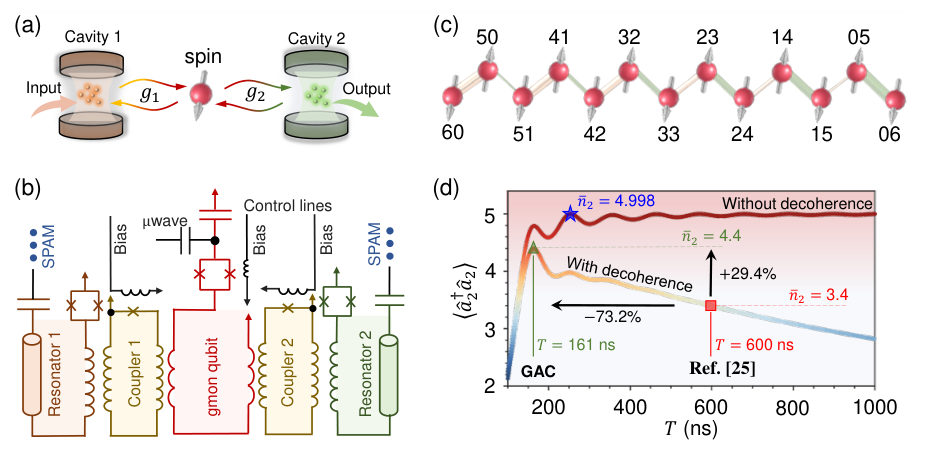
<figcaption class="paper-figure-caption"><b>Fig 1.</b> FIG. 1. Topological photon transfer in a two-mode JC model. (a) Schematic of the two-mode JC model: two cavity modes (resonators) are coupled to a common spin (qubit) with time-dependent strengths g1(t) and g2(t). (b) Superconducting circuit implementation of the device (adapted from Ref. [25]), consisting of a central gmon qubit inductively coupled to two resonators via tunable couplers. (c) 1D FSL for total excitation number N = 6, where each site represents a Fock state | ↓/ ↑; n1, n2⟩. The site-dependent hopping amplitudes are proportional to g1√n1 (brown) and g2√n2 (green). (d) Final average photon number in the superconducting resonator 2 as a function of duration T for N = 5 with α =...</figcaption>
</figure>
<figure class="paper-figure-card">
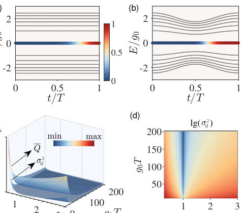
<figcaption class="paper-figure-caption"><b>Fig 2.</b> FIG. 2. Global adiabatic criterion applied to the coupling family in Equation (6). (a) Time-independent energy spec- trum for α = 1 (constant gap ∆E = √</figcaption>
</figure>
<figure class="paper-figure-card">
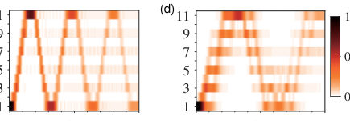
<figcaption class="paper-figure-caption"><b>Fig 3.</b> FIG. 3. Numerical evaluation of topological photon transfer and decoherence effects. (a) Fidelity as a function of α and g0T for N = 6 (initial state | ↓; 6, 0⟩). The green dashed line marks the 0.95-fidelity contour, showing that α = 1 requires the smallest g0T to reach this fidelity. (b) Final average pho- ton number ¯n2 = ⟨a† 2a2⟩versus duration T for different total photon numbers N (solid: α = 1, dashed: α = 2). For each curve, a peak appears due to competition between unitary transfer and decoherence. (c) Time-dependent populations on the 11 FSL sites for N = 5, α = 1, and the optimal dura- tion T = 161 ns. Coherent edge-to-edge pumping is observed, though even-numbered sites are also...</figcaption>
</figure>
<figure class="paper-figure-card">
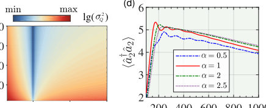
<figcaption class="paper-figure-caption"><b>Fig 4.</b> FIG. 4. Constant energy gaps do not always guarantee fast transfer. (a) Time-dependent coupling strengths for α = 2 using the alternative coupling family in Equation (10) that keeps g2 1 + g2 2 = g2 0 constant for any α. (b) Corresponding eigenenergies, which are time- and α-independent. Color on the zero-energy line indicates |⟨↓; 0, 6|ψdark(t)⟩|2. (c) Numer- ically computed variance σ2 Q of the nonadiabaticity factor as a function of α and g0T, showing that σ2 Q = 0 only at α = 1. (d) Final average photon number ¯n2 versus duration T for dif- ferent α (initial state | ↓; 6, 0⟩) including decoherence. The α = 1 curve yields the shortest duration and the highest peak ¯n2, confirming that...</figcaption>
</figure>
</div>

<p><strong>Summary.</strong> This paper develops a Global Adiabatic Criterion (GAC) to explain fast topological photon transfer in Fock-state lattices. It proves that the key to speed is minimizing the variance of the nonadiabatic coupling, not just maintaining a constant energy gap. The optimal protocol uses a sinusoidal coupling profile, predicting significantly faster and more efficient transfer times than previously reported.</p>
<p><strong>Why it may be interesting.</strong> This work provides a quantitative, general theoretical framework for optimizing quantum light transport, moving beyond simple gap-closing arguments to focus on the uniformity of nonadiabatic dynamics.</p>
<details>
<summary>Detailed structure</summary>
<p><strong>Main problem.</strong> To provide a rigorous explanation for the fast topological photon transfer observed in Fock-state lattices and establish a general framework for fast topological photonics engineering.</p>
<p><strong>Main result.</strong> The essential condition for fast transfer is the vanishing temporal variance of the nonadiabatic coupling factor ($\sigma_Q^2 = 0$), which is achieved optimally using a sinusoidal coupling profile ($\alpha=1$).</p>
<p><strong>Method.</strong> The authors developed a Global Adiabatic Criterion (GAC) to bound infidelity using the mean and variance of the nonadiabatic factor, analyzing power-law coupling profiles.</p>
<p><strong>Model / system.</strong> The system is modeled using a two-mode Jaynes-Cummings (JC) model applied to Fock-state lattices (FSLs), which simulates topological photon transfer.</p>
<p><strong>Key observables.</strong> Transferred photon number ($ar{n}_2$), infidelity ($\epsilon$), and the nonadiabaticity variance ($\sigma_Q^2$).</p>
<p><strong>Important parameters / regimes.</strong> Optimal transfer duration for a five-photon state is predicted to be 161 ns, showing a linear scaling with photon number $N$.</p>
<p><strong>Assumptions / limitations.</strong> The analysis incorporates experimental decoherence parameters and relies on the validity of the Global Adiabatic Criterion.</p>
<p><strong>Figures summary.</strong> Figures illustrate the setup (JC model, FSL), compare fidelity/photon number vs. coupling exponent ($\alpha$), and show the variance $\sigma_Q^2$ vanishing only for the sinusoidal case ($\alpha=1$).</p>
<p><strong>Paper structure.</strong> The paper introduces the physical model and the GAC, analyzes power-law coupling profiles, determines the optimal profile by minimizing nonadiabaticity variance, and finally predicts significantly faster transfer times compared to previous experimental benchmarks.</p>
</details>
<details>
<summary>Abstract</summary>
<p>Topological state transfer in Fock-state lattices has been demonstrated with high speed using sinusoidal profiles of coupling, yet the underlying reason has remained unclear. A global adiabatic criterion (GAC) is developed to bound the infidelity by the mean and variance of the nonadiabatic factor. The GAC reveals that the key to fast transfer is not a constant energy gap but the vanishing nonadiabaticity variance. For power-law coupling profiles, the variance vanishes only for the sinusoidal shape, which is thus globally optimal. Incorporating experimental decoherence parameters, it is predicted that the optimal transfer duration for a five-photon state is 161 ns, far shorter than 600 ns used in the experiment, reducing time by over 73% while increasing transferred photons by 29%. The optimal duration follow a simple linear scaling with photon number, providing a practical guideline. Through constructing an alternative constant-gap coupling family, it is confirmed that a constant gap alone is not sufficient for fast topological photon transfer. The essential condition is uniformity of nonadiabaticity. This work offers a rigorous explanation for the observed speed and a general framework for fast topological photonics engineering.</p>
</details>
<p><sub><a href="#top">↑ back to top</a></sub></p>

<p><a id="paper-2606.02794"></a></p>
<h3 id="scaling-laws-for-neural-network-quantum-states"><a href="http://arxiv.org/abs/2606.02794v1">Scaling Laws for Neural-Network Quantum States</a></h3>
<p><strong>Authors:</strong> Riccardo Rende, Alessandro Sinibaldi, Luciano Loris Viteritti, Roeland Wiersema, Antoine Georges, Giuseppe Carleo<br>
<strong>Type:</strong> theory · <strong>Category:</strong> disordered systems and neural networks · <strong>PDF:</strong> <a href="https://arxiv.org/pdf/2606.02794v1">https://arxiv.org/pdf/2606.02794v1</a><br>
<strong>Analysis basis:</strong> full PDF text, analyzed in chunks
<strong>Topic relevance:</strong> <code>analog quantum simulation</code> <strong>3/5</strong> · <code>exotic spin models in light-matter</code> <strong>3/5</strong> · <code>methods for driven-dissipative</code> <strong>2/5</strong> · <code>entanglement &amp; information structure</code> <strong>1/5</strong></p>
<div class="figure-strip-hint">↔ Scroll figures horizontally</div>
<div class="paper-figures-scroll">
<figure class="paper-figure-card">
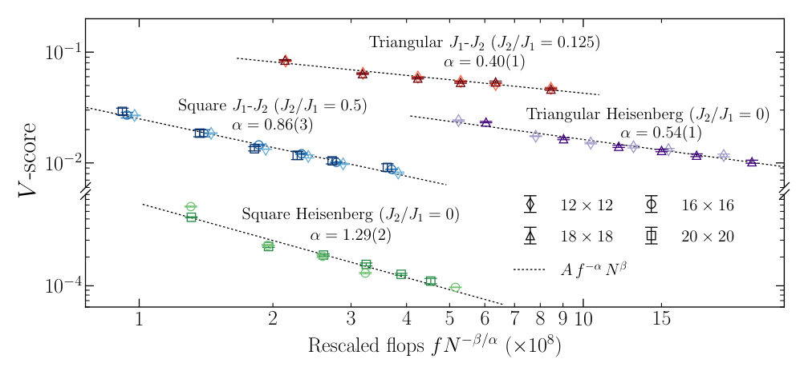
<figcaption class="paper-figure-caption"><b>Fig 1.</b> FIG. 1. Scaling collapse of the V -score for transformer wave function on four two-dimensional spin Hamiltonians: square Heisenberg, triangular Heisenberg, square J1-J2 Heisenberg, and triangular J1-J2 Heisenberg model (see Section II). For each model, V -score data obtained at linear system sizes L = 12, 16, 18, 20 are plotted against the rescaled compute fN −β/α, where f is the training compute in FLOPs and α, β are the exponents of the scaling Ansatz of Eq. (3). After rescaling, data from all system sizes collapse onto a single power law V -score = A f −α N β (dashed black lines), with the fitted exponent α indicated next to each data set. The exponent varies systematically across...</figcaption>
</figure>
<figure class="paper-figure-card">
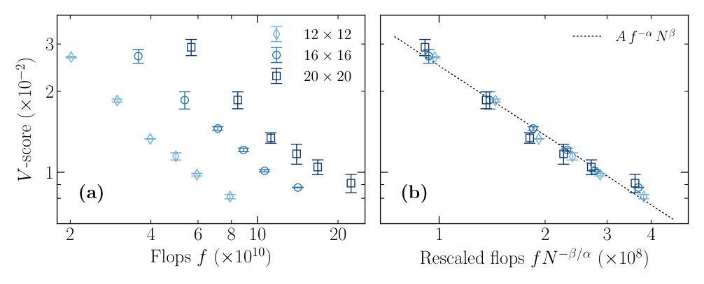
<figcaption class="paper-figure-caption"><b>Fig 2.</b> FIG. 2. Illustration of the scaling collapse procedure for the square J1-J2 Heisenberg model. Panel (a): V -score as a function of the training compute f (FLOPs) for linear system sizes L = 12, 16, 20. Panel (b): The same data plotted against the rescaled compute fN −β/α, with α and β taken from Table I, collapse onto a single curve well described by the power law V -score = A f −αN β (dashed black line) [see Eq. (4)].</figcaption>
</figure>
<figure class="paper-figure-card">
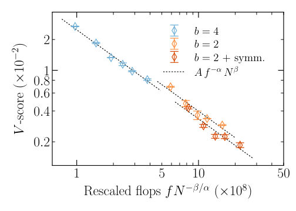
<figcaption class="paper-figure-caption"><b>Fig 3.</b> FIG. 3. V -score as a function of the rescaled compute fN −β/α and corresponding power law fit for different ar- chitectural choices: the transformer architecture with linear patch size b = 4 as in Fig. 1, the architecture with a smaller b = 2, and the architecture with b = 2 and augmented with translation symmetries. The system considered here is the square J1-J2 Heisenberg model with L = 12.</figcaption>
</figure>
<figure class="paper-figure-card">
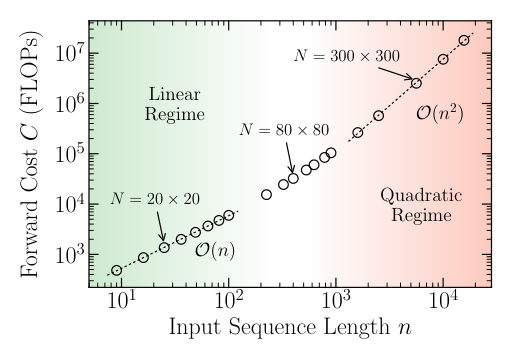
<figcaption class="paper-figure-caption"><b>Fig 4.</b> FIG. 4. Cost C of a single forward evaluation of the trans- former wave function on one spin configuration measured in FLOPs as a function of the length of the input sequence n = L2/b2. The transformer architecture considered for this analysis has linear patch size b = 4, number of layers nl = 8 and embedding dimension d = 72. A linear scaling regime of the cost C with n (highlighted in green) and a quadratic scaling regime (highlighted in red) are identifiable.</figcaption>
</figure>
<figure class="paper-figure-card">
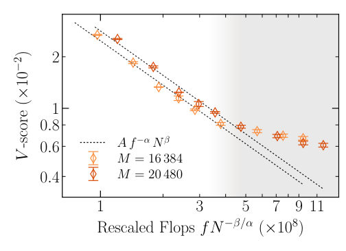
<figcaption class="paper-figure-caption"><b>Fig 5.</b> FIG. 5. V -score as a function of the rescaled compute fN −β/α and corresponding power law fit for optimizations performed using two numbers of Monte Carlo samples, M = 16 384 and M = 20 480. The system considered here is the square J1-J2 Heisenberg with L = 12. The regime where the scaling laws cease to apply is highlighted in grey.</figcaption>
</figure>
</div>

<p><strong>Summary.</strong> This work applies scaling laws from deep learning to variational quantum simulations of spin models. By analyzing how the approximation error decays with training compute, the authors establish a quantitative measure ($\alpha$) that characterizes the intrinsic difficulty of the target quantum ground state. This suggests scaling laws can serve as a general benchmark for variational quantum algorithms.</p>
<p><strong>Why it may be interesting.</strong> It provides a novel, quantitative framework—the scaling exponent $\alpha$—to benchmark the difficulty of approximating quantum ground states, linking machine learning theory directly to condensed matter physics complexity.</p>
<details>
<summary>Detailed structure</summary>
<p><strong>Main problem.</strong> The paper investigates whether the scaling laws observed in modern neural networks can be used to characterize the computational complexity of solving physical problems using Neural-Network Quantum States (NQS).</p>
<p><strong>Main result.</strong> The accuracy measure ($V$-score) decays as a power law in training compute, and the scaling exponent systematically decreases with physical frustration, suggesting it quantifies the ground state's representational difficulty.</p>
<p><strong>Method.</strong> The authors use a variational approach with transformer wave functions to approximate ground states, fitting the resulting error metric ($V$-score) to a power law dependent on training compute and system size.</p>
<p><strong>Model / system.</strong> The study focuses on the $J_1$-$J_2$ Heisenberg model on 2D lattices (square and triangular) to generate target ground states spanning different levels of magnetic frustration.</p>
<p><strong>Key observables.</strong> The $V$-score (a measure of variational accuracy), and the scaling exponents ($\alpha, eta$) derived from the power-law fit of the $V$-score vs. compute.</p>
<p><strong>Important parameters / regimes.</strong> Frustration level ($J_2/J_1$ ratio), system size ($L 	imes L$ up to $20 	imes 20$), and training compute ($f$).</p>
<p><strong>Assumptions / limitations.</strong> The primary assumption is that the scaling behavior follows a power law, and that the training compute scales linearly with system size ($f \approx aN$).</p>
<p><strong>Figures summary.</strong> Figure 1 shows the scaling collapse of the $V$-score for various spin Hamiltonians against rescaled compute. Figure 2 illustrates the data collapse procedure for the square $J_1-J_2$ model.</p>
<p><strong>Paper structure.</strong> The paper introduces the problem of applying ML scaling laws to physics, details the use of transformer wave functions for the $J_1-J_2$ model, presents the power-law fitting and data collapse, and concludes by interpreting the scaling exponent as a measure of physical complexity.</p>
</details>
<details>
<summary>Abstract</summary>
<p>Scaling laws, the power-law relations between loss, architecture size, and compute observed in modern neural networks, offer a quantitative way to characterize the complexity of a learning problem, with the exponent governing the decay of the loss reflecting how rapidly additional resources translate into improved accuracy, and thus how hard the target is to learn. Whether an analogous framework can characterize the complexity of physical problems remains open. We address this question for Neural-Network Quantum States, a leading variational approach for strongly correlated quantum many-body systems. Using transformer wave functions to approximate ground states of the $J_1$-$J_2$ Heisenberg model on triangular and square lattices with up to $20\times 20$ sites, we find that the $V$-score, a measure of accuracy of a variational state, decays as a power law in training compute. Under an appropriate rescaling of compute, results for different system sizes collapse onto a single curve, analogous to scaling collapse in critical phenomena. The resulting power law is, to a good approximation, independent of the number of sites, showing that the transformer Ansatz is size-consistent for the systems considered. The exponent decreases systematically with frustration, identifying it as a quantitative measure of representational difficulty of the ground state and establishing scaling laws as a general framework for benchmarking variational ansätze.</p>
</details>
<p><sub><a href="#top">↑ back to top</a></sub></p>

<p><a id="paper-2606.02749"></a></p>
<h3 id="vector-magnetometry-with-broadband-microwave-fields-in-nitrogen-vacancy-centers-in-diamond"><a href="http://arxiv.org/abs/2606.02749v1">Vector Magnetometry with Broadband Microwave Fields in Nitrogen-Vacancy Centers in Diamond</a></h3>
<p><strong>Authors:</strong> Tom R. Rieckmann, Arezoo Afshar, Aaron Z. Goldberg, Lilian Childress, Stefan Scheel, Khabat Heshami<br>
<strong>Type:</strong> both · <strong>Category:</strong> disordered systems and neural networks · <strong>PDF:</strong> <a href="https://arxiv.org/pdf/2606.02749v1">https://arxiv.org/pdf/2606.02749v1</a><br>
<strong>Analysis basis:</strong> full PDF text, analyzed in chunks
<strong>Topic relevance:</strong> <code>QC/QI experiment</code> <strong>3/5</strong> · <code>spintronics-quantum-optics interface</code> <strong>3/5</strong> · <code>methods for driven-dissipative</code> <strong>2/5</strong> · <code>quantum measurements</code> <strong>1/5</strong></p>
<div class="figure-strip-hint">↔ Scroll figures horizontally</div>
<div class="paper-figures-scroll">
<figure class="paper-figure-card">
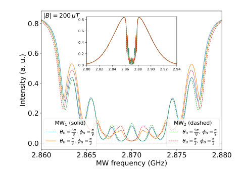
<figcaption class="paper-figure-caption"><b>Fig 1.</b> FIG. 1. Frequency-domain response of the NV ensembles at a magnetic field of |B| = 200 µT for two orthogonal mi- crowave polarization components. The first polarization vector, bMW1 (solid lines), is aligned along the +z-axis (θ1 = 0, ϕ1 = 0) with unit amplitude. The second polar- ization vector, bMW2 (dashed lines), lies in the transverse xy-plane with θ2 = π/2 and ϕ2 = 7π/12, also with unit amplitude. Each set of curves corresponds to a different field orientation (θ, ϕ), illustrating the distinct spectral re- sponses associated with the two linear MW polarization directions. The inset provides a zoomed-out view over the broader frequency range, illustrating the full resonance structure...</figcaption>
</figure>
<figure class="paper-figure-card">
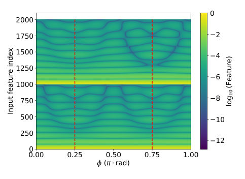
<figcaption class="paper-figure-caption"><b>Fig 2.</b> FIG. 2. Concatenated signals IMW1(t) and IMW2(t) on the vertical axis after preprocessing for different ϕ with |B| = 100µT and θ = 3π/8. The red dashed lines show symmetry axes for the local behavior around them.</figcaption>
</figure>
<figure class="paper-figure-card">
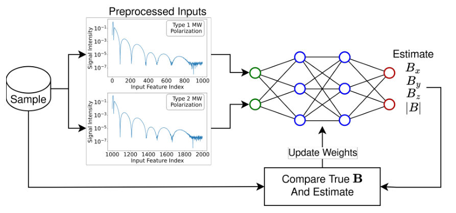
<figcaption class="paper-figure-caption"><b>Fig 3.</b> FIG. 3. Depiction of NN-based Vector Magnetometry. Apart from a few simple preprocessing steps, the NN is tasked with directly giving Bx, By, Bz, |B| as output. The weights of the NN are updated during training using the mean square error between the true and estimated B.</figcaption>
</figure>
<figure class="paper-figure-card">
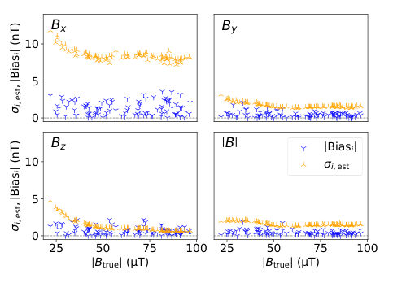
<figcaption class="paper-figure-caption"><b>Fig 4.</b> FIG. 5. σi,est and Bias of the estimation for all Bi with an SNR of 70 dB in Method A. Each data point is extracted from a distribution of a series of estimations at the same Btrue, as depicted in Figure 4. One can see σi,est strongly depends on |Btrue|, whereas the Bias is mostly indepen- dent. Values for the minimum, maximum, and median of σi,est are given in Table I.</figcaption>
</figure>
<figure class="paper-figure-card">
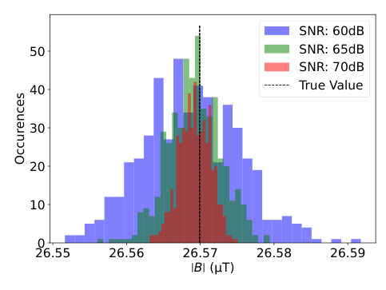
<figcaption class="paper-figure-caption"><b>Fig 5.</b> FIG. 4. Example histogram from the estimation of |B| using 500 different noisy samples at each SNR.</figcaption>
</figure>
</div>

<p><strong>Summary.</strong> This paper presents a breakthrough method for full vector magnetometry using Nitrogen-Vacancy centers in diamond. It overcomes the limitations of single-polarization measurements by employing two orthogonal microwave pulses and analyzing the resulting signals with deep neural networks. The technique achieves high sensitivity, enabling accurate magnetic field measurements down to the microtesla range without needing an external bias field.</p>
<p><strong>Why it may be interesting.</strong> This work bridges quantum sensing (NV centers) with advanced machine learning techniques (NNs) to solve a complex inverse problem in condensed matter physics, providing a robust, high-precision measurement tool.</p>
<details>
<summary>Detailed structure</summary>
<p><strong>Main problem.</strong> The paper addresses the challenge of performing full vector magnetometry ($   ext{B}_x,   ext{B}_y,   ext{B}_z$) using Nitrogen-Vacancy (NV) centers in diamond.</p>
<p><strong>Main result.</strong> A novel method utilizing two orthogonally polarized microwave pulses and deep neural networks achieves high sensitivity ($\sim 5-100 	ext{ pT}/\sqrt{	ext{Hz}}$) and accuracy ($  ext{nT}$) for measuring the full magnetic field vector.</p>
<p><strong>Method.</strong> The technique involves measuring the transmission of broadband microwave pulses through the NV ensemble, which is then analyzed using deep neural networks trained on simulated data.</p>
<p><strong>Model / system.</strong> The physical system is the NV center in diamond, whose spin Hamiltonian governs the magnetic response. The measurement relies on analyzing the spectral line splitting induced by the Zeeman effect using two distinct, orthogonally polarized microwave fields.</p>
<p><strong>Key observables.</strong> Measured microwave signal intensities ($I_{MW1}(t), I_{MW2}(t)$) and the estimated magnetic field components ($ ext{B}_x,   ext{B}_y,   ext{B}_z$).</p>
<p><strong>Important parameters / regimes.</strong> Sensitivities ranging from $5 	ext{ pT}/\sqrt{	ext{Hz}}$ to $100 	ext{ pT}/\sqrt{	ext{Hz}}$; measurement down to $25 	ext{ }\mu	ext{T}$; $   ext{SNR}$ of $70 	ext{ dB}$.</p>
<p><strong>Assumptions / limitations.</strong> The method requires using two orthogonal microwave polarizations to resolve all three magnetic field components independently; the analysis relies on training deep neural networks on simulated data.</p>
<p><strong>Figures summary.</strong> Figures illustrate the frequency-domain response of NV ensembles, the dependence of estimation statistics ($\sigma_{i,est}$ and Bias) on the true field magnitude $|\mathbf{B}_{true}|$, and the improvement gained by using two microwave polarizations over one.</p>
<p><strong>Paper structure.</strong> The paper develops the theory for vector magnetometry using two MW polarizations, details the inverse problem solving via deep neural networks, analyzes the performance metrics (sensitivity, bias) as a function of the true field strength, and discusses limitations and potential improvements.</p>
</details>
<details>
<summary>Abstract</summary>
<p>We present a novel method for full vector magnetometry using nitrogen-vacancy (NV) centers. In contrast to conventional optically detected magnetic resonance techniques, our method employs two distinct broadband microwave pulses and measures them after transmission through the NV sensor medium, thus capturing the line splitting of the ground state triplet due to the Zeeman effect. Two orthogonally polarized microwave pulses allow resolving all magnetic field components independently by reading out differently oriented NV centers. Simulated data is analyzed using deep neural networks, whose efficacy we expect to translate very well to experiments. Our method yields sensitivities between $5~\mathrm{pT}/\sqrt{\mathrm{Hz}}$ and $100~\mathrm{pT}/\sqrt{\mathrm{Hz}}$ across different magnetic field vector components, while achieving approximately $\mathrm{nT}$ accuracy at a signal-to-noise (SNR) ratio of $70~\mathrm{dB}$. By being capable of accurately measuring magnetic fields down to $25~\mathrm{μT}$, the need for a bias field beyond Earth's magnetic field is eliminated.</p>
</details>
<p><sub><a href="#top">↑ back to top</a></sub></p>

<p><a id="paper-2606.03380"></a></p>
<h3 id="energy-selective-quantum-search-with-ising-hamiltonian-phase-oracles"><a href="http://arxiv.org/abs/2606.03380v1">Energy-selective quantum search with Ising Hamiltonian phase oracles</a></h3>
<p><strong>Authors:</strong> A. S. Plyashechnik, A. A. Zhukov, A. V. Lebedev, W. V. Pogosov<br>
<strong>Type:</strong> theory · <strong>Category:</strong> disordered systems and neural networks · <strong>PDF:</strong> <a href="https://arxiv.org/pdf/2606.03380v1">https://arxiv.org/pdf/2606.03380v1</a><br>
<strong>Analysis basis:</strong> full PDF text, analyzed in chunks
<strong>Topic relevance:</strong> <code>analog quantum simulation</code> <strong>3/5</strong> · <code>exotic spin models in light-matter</code> <strong>3/5</strong> · <code>entanglement &amp; information structure</code> <strong>1/5</strong> · <code>non-equilibrium dynamics</code> <strong>1/5</strong></p>
<div class="figure-strip-hint">↔ Scroll figures horizontally</div>
<div class="paper-figures-scroll">
<figure class="paper-figure-card">
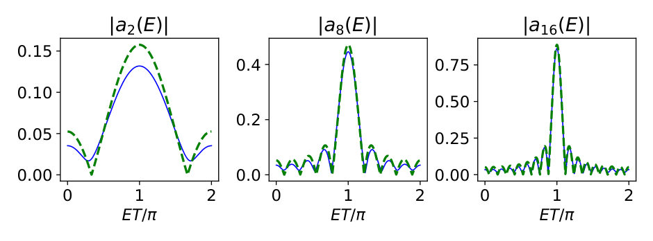
<figcaption class="paper-figure-caption"><b>Fig 1.</b> FIG. 1. Amplification profile for an annealed Gaussian spectrum near the principal phase resonance ET = π. The horizontal axis is the dimensionless phase ET/π, and the three panels show the amplitude magnitude after K = 2, 8, 16 iterations. Solid curves are obtained from the exact spectral recurrence, while dashed curves show the local resonant approximation. The parameters are chosen such that ΣT ≃0.72. The agreement near ET/π = 1 illustrates that the local response captures the growth and narrowing of the Gaussian resonance.</figcaption>
</figure>
<figure class="paper-figure-card">
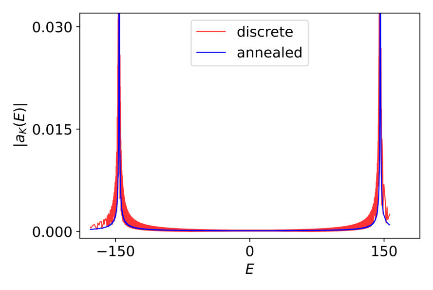
<figcaption class="paper-figure-caption"><b>Fig 2.</b> FIG. 2. Energy-space amplification profile for a single zero-field random Ising instance compared with the annealed Gaussian prediction. The Ising instance has n = 24, hi = 0, and independent couplings Jij ∼N(0, 1). The red curve shows the response of the discrete Ising spectrum, while the blue curve shows the annealed Gaussian model with the same energy variance. Both profiles develop resonances near ET = ±π, but the discrete Ising response is shifted and distorted by spectral correlations.</figcaption>
</figure>
<figure class="paper-figure-card">
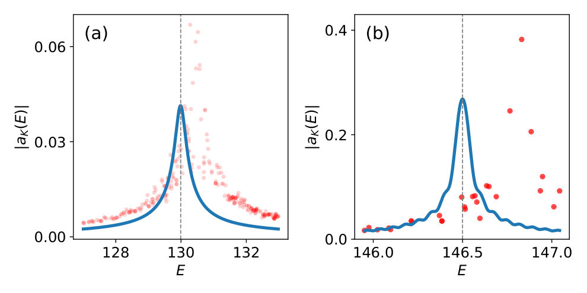
<figcaption class="paper-figure-caption"><b>Fig 3.</b> FIG. 3. Zoom of the positive-energy resonance for zero-field random Ising spectra at n = 24. Blue curves show the annealed Gaussian response, red points show the amplitudes on the discrete Ising energy levels, and the vertical dashed line marks the Gaussian target energy E∗= π/T. Panel (a) corresponds to a denser spectral tail, approximately µ ≃0.6, with a broader and lower peak. Panel (b) corresponds to a sparser tail, approximately µ ≃1.2, with a narrower and higher peak. In both cases the discrete Ising peak is displaced relative to the Gaussian target, illustrating the realization-dependent phase shift φ0.</figcaption>
</figure>
<figure class="paper-figure-card">
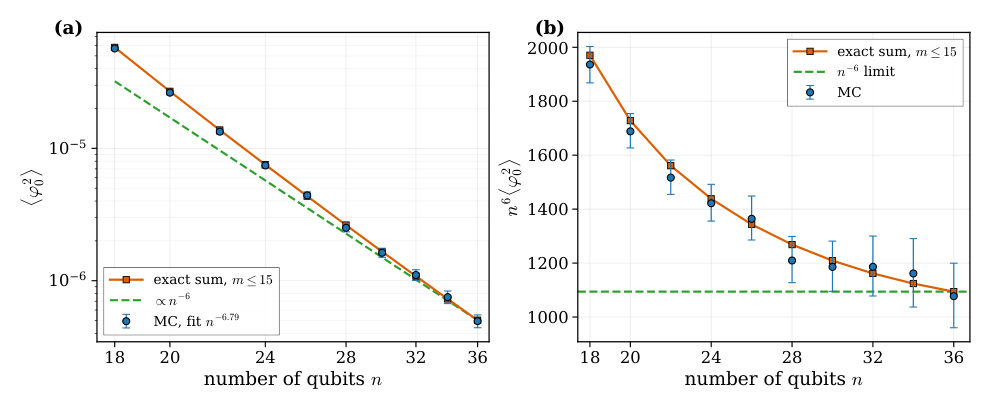
<figcaption class="paper-figure-caption"><b>Fig 4.</b> FIG. 4. Scaling of the correlation-induced resonance displacement in the zero-field random Ising ensemble. The simulations use σJ = 1, Jij ∼N(0, 1), hi = 0, µ = 3/2, and the truncated characteristic function with m ≤15. Panel (a) shows the disorder-averaged second moment ⟨φ2 0⟩for n = 18, . . . , 36. Circles are Monte Carlo estimates, with error bars denoting 95% bootstrap confidence intervals over disorder realizations. Monte Carlo sampling is over disorder realizations, not over spin configurations. Squares show the finite-n covariance sum evaluated with the same truncation, and the dashed line indicates the asymptotic n−6 scaling. Panel (b) shows the scaled quantity n6⟨φ2 0⟩, which...</figcaption>
</figure>
</div>

<p><strong>Summary.</strong> This paper develops a theory for an energy-selective quantum search using the natural phase accumulation from an Ising Hamiltonian's time evolution. It shows that this method achieves Grover-like speedups, while also providing crucial theoretical tools to correct for spectral shifts caused by real-world Hamiltonian correlations. This advances the understanding of quantum computation on disordered physical systems.</p>
<p><strong>Why it may be interesting.</strong> The work provides a deep theoretical link between quantum search algorithms and the spectral properties of disordered Hamiltonians, offering insights into how physical constraints (like spectral correlations) affect quantum computational scaling.</p>
<details>
<summary>Detailed structure</summary>
<p><strong>Main problem.</strong> The paper investigates an energy-selective quantum search primitive that uses the physical evolution of an Ising Hamiltonian as a continuous phase oracle, contrasting it with standard Boolean oracles.</p>
<p><strong>Main result.</strong> The algorithm successfully achieves a Grover-type amplification peak, and the required oracle calls scale according to a square-root law in the annealed Gaussian limit.</p>
<p><strong>Method.</strong> The analysis employs spectral theory, generating functions, and recurrence relations to model the quantum amplitude evolution in energy space.</p>
<p><strong>Model / system.</strong> The system is modeled by the Ising Hamiltonian, $H(\mathbf{s})$, which describes disordered magnets and is used in optimization problems. The oracle is the time evolution operator $U_T = \exp(-iTH)$, which imparts a phase proportional to the state's energy $E_s$.</p>
<p><strong>Key observables.</strong> The primary observables are the resonance peak position, width, and height, which determine the success probability of the search.</p>
<p><strong>Important parameters / regimes.</strong> Key parameters include the evolution time $T$, the target energy $E^*$, and the correlation-induced spectral shift $\varphi_0 = O(n^{-3})$.</p>
<p><strong>Assumptions / limitations.</strong> The analysis relies on approximations such as the annealed Gaussian density of states and the ability to correct for spectral correlations using spectral symmetrization or iterative calibration.</p>
<p><strong>Figures summary.</strong> Figures compare the discrete random Ising spectrum response against the annealed Gaussian prediction, illustrating the measurable shift and distortion caused by spectral correlations.</p>
<p><strong>Paper structure.</strong> The paper progresses from defining the energy-selective oracle to deriving the recurrence relations, analyzing the idealized annealed Gaussian case, and finally tackling the complexities introduced by spectral correlations through calibration techniques.</p>
</details>
<details>
<summary>Abstract</summary>
<p>Ising Hamiltonians are basic models of disordered magnets and a standard language for quantum and classical optimization. We study an energy-selective quantum search primitive in which the physical evolution \(\exp(-\mathrm{i} T H)\) is used directly as a Hamiltonian phase oracle. Unlike a Boolean oracle, this oracle marks configurations continuously by their phases and selects a finite resonance band rather than a preassigned marked set. We show that alternating it with the Grover diffusion operator nevertheless produces a Grover-type amplification peak. An exact spectral recurrence and a generating-function representation determine the peak position, width, and height. For an annealed Gaussian density of states, target energies in a high-density tail require \(Θ(\sqrt{2^n/M})\) oracle calls when the resonance contains \(M\) configurations. For random Ising spectra, overlap-induced correlations shift and distort the peak; spectral symmetrization and iterative calibration remove this detuning for prescribed-energy targeting.</p>
</details>
<p><sub><a href="#top">↑ back to top</a></sub></p>

<p><a id="paper-2606.03474"></a></p>
<h3 id="multiscale-phase-separation-in-chemophoretic-active-matter"><a href="http://arxiv.org/abs/2606.03474v1">Multiscale Phase Separation in Chemophoretic Active Matter</a></h3>
<p><strong>Authors:</strong> Manisha Jhajhria, Subir K. Das, Snigdha Thakur<br>
<strong>Type:</strong> theory · <strong>Category:</strong> statistical mechanics · <strong>PDF:</strong> <a href="https://arxiv.org/pdf/2606.03474v1">https://arxiv.org/pdf/2606.03474v1</a><br>
<strong>Analysis basis:</strong> full PDF text, analyzed in chunks
<strong>Topic relevance:</strong> <code>non-equilibrium dynamics</code> <strong>3/5</strong> · <code>non-equilibrium universality</code> <strong>3/5</strong> · <code>driven-dissipative phase transition</code> <strong>1/5</strong></p>
<div class="figure-strip-hint">↔ Scroll figures horizontally</div>
<div class="paper-figures-scroll">
<figure class="paper-figure-card">
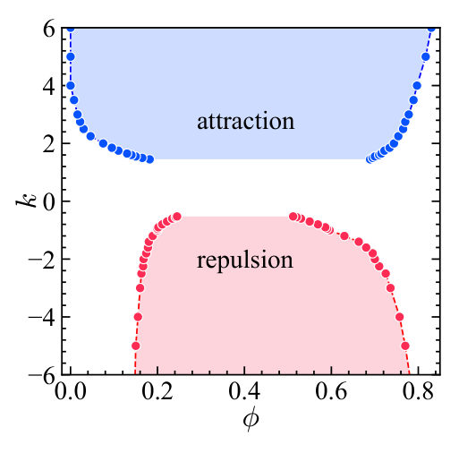
<figcaption class="paper-figure-caption"><b>Fig 1.</b> FIG. 2. Steady-state coexistence curves for the binary sus- pensions in the phoretic strength (k) vs local packing fraction (ϕ) plane. For k &lt; 0, the system exhibits a phase separation due to chemorepulsion (red), and for k &gt; 0, the system mod- els chemoattraction (blue).</figcaption>
</figure>
<figure class="paper-figure-card">
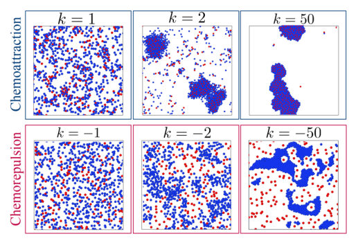
<figcaption class="paper-figure-caption"><b>Fig 2.</b> FIG. 1. Instantaneous late time (t = 2000) simulation snapshots showing aggregation in binary mixtures of source (red) and phoretic (blue) particles. The top panels display chemoattractive cases with clusters containing both S and P particles. The bottom panels show cases for chemorepulsion, where the clusters consist solely of P particles. The diffusio- phoretic strength in both cases has been kept at |k| = 1, 2, 50. Only (L/4)×(L/4) parts of the original system (L = 150) are shown for clarity.</figcaption>
</figure>
<figure class="paper-figure-card">
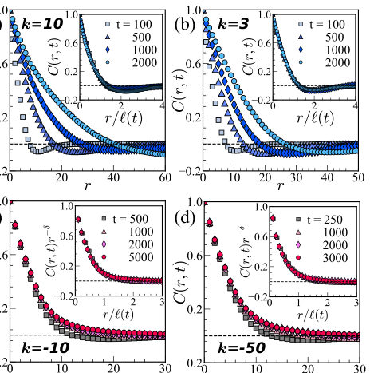
<figcaption class="paper-figure-caption"><b>Fig 3.</b> FIG. 3. Two-point equal time correlation function, C(r, t), is plotted against r. In (a) and (b) we show results for the chemoattractive case with k = 10 and k = 3, respectively. The insets of these figures show the scaling plots of C(r, t), where the distance is divided by the time-dependent domain lengths ℓ(t). In (c) and (d), we show C(r, t) for the chemore- pulsive case with k = −10 and k = −50, respectively. Due to the fractal nature of clusters in this system, the scaling form of C(r, t) gets modified via the introduction of df. The dashed horizontal lines represent the ordinate value “0”.</figcaption>
</figure>
<figure class="paper-figure-card">
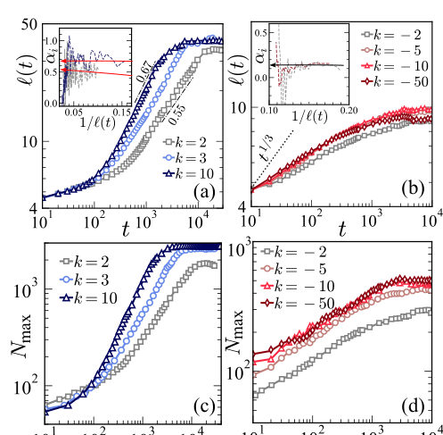
<figcaption class="paper-figure-caption"><b>Fig 4.</b> FIG. 4. Evolutions of domain lengths ℓ(t) for different k val- ues, for the cases of (a) chemoattraction and (b) chemorepul- sion. These results are obtained from the scaling of C(r, t). The insets of both (a) and (b) show the instantaneous growth exponent, αi, as a function of 1/ℓ(t). The arrow-headed lines point towards the ℓ→∞limit. (c-d) Evolutions of maximum cluster size (Nmax), as a function of time, for chemoattractive and chemorepulsive cases, respectively.</figcaption>
</figure>
<figure class="paper-figure-card">
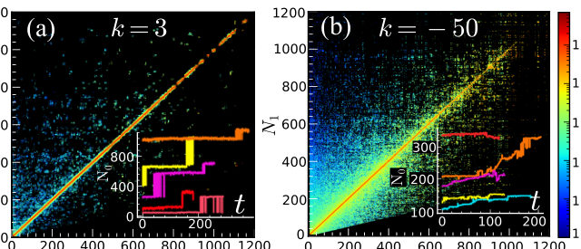
<figcaption class="paper-figure-caption"><b>Fig 5.</b> FIG. 5. Transition probability matrix P(N1|N0, τs), analyzed for time interval τs = 10τ, for (a) chemoattractive (k = 3) and (b) chemorepulsive (k = −50) cases. The color-bar represents P(N1|N0, τs) on log scale. Insets of (a) and (b) show the number of particles in clusters of different sizes tracked over time t. (c) Conditional growth-fragmentation bias B(N0), for k = 3, 50 and k = −50, are shown against N0. Here B &gt; 0 indicates growth dominated dynamics and B &lt; 0 means fragmentation-dominated dynamics.</figcaption>
</figure>
</div>

<p><strong>Summary.</strong> This work analyzes phase separation in active matter driven by chemical gradients, contrasting chemoattractive and chemorepulsive coupling. The key finding is that attraction leads to continuous, macroscopic domain growth, whereas repulsion causes growth to arrest at a microscale due to dynamical trapping. The study uses advanced diagnostics like growth exponents and transition matrices to distinguish these fundamentally different non-equilibrium pathways.</p>
<p><strong>Why it may be interesting.</strong> The study provides a detailed, non-equilibrium characterization of phase separation driven by active, non-reciprocal forces, offering insights into pattern formation far from equilibrium that can inform models of active matter dynamics relevant to AMO systems.</p>
<details>
<summary>Detailed structure</summary>
<p><strong>Main problem.</strong> The study investigates how nonreciprocal interactions in chemophoretic active matter lead to multiscale phase separation, comparing the kinetics in chemoattractive versus chemorepulsive coupling regimes.</p>
<p><strong>Main result.</strong> Chemoattraction drives sustained, macrophase separation via cluster coalescence, while chemorepulsion leads to arrested, microscale phase separation due to strong caging and fragmentation.</p>
<p><strong>Method.</strong> The research employs simulations and scaling analysis using the two-point equal-time correlation function, cluster transition matrices, and Mean-Squared Displacement (MSD) to characterize growth dynamics.</p>
<p><strong>Model / system.</strong> The system models binary mixtures of chemically active source (S) and phoretic (P) particles whose motion is governed by Langevin dynamics and asymmetric chemophoretic forces. The interaction strength is controlled by the parameter k, determining attraction or repulsion.</p>
<p><strong>Key observables.</strong> Growth exponents ($\alpha$), fractal dimension ($d_f$), cluster transition matrices, and Mean-Squared Displacements (MSD).</p>
<p><strong>Important parameters / regimes.</strong> Phoretic strength parameter $k$ (sign determines attraction/repulsion), particle density ($\phi$), and temperature ($k_B T$).</p>
<p><strong>Assumptions / limitations.</strong> The analysis involves mapping continuum systems to a 2D square lattice and applying coarse-graining techniques to analyze domain morphology.</p>
<p><strong>Figures summary.</strong> Figures illustrate simulation snapshots comparing aggregation in both regimes, phase coexistence curves, and the evolution of cluster size and MSD, showing distinct scaling behaviors.</p>
<p><strong>Paper structure.</strong> The paper systematically compares the phase-ordering kinetics by analyzing the structural evolution (correlation functions), the cluster size dynamics (transition matrices and growth/fragmentation bias), and the particle transport (MSD) across the chemoattractive ($k>0$) and chemorepulsive ($k<0$) regimes.</p>
</details>
<details>
<summary>Abstract</summary>
<p>Nonreciprocal interactions in active matter provide interesting structure and dynamics. Here we investigate chemophoretic systems in which nonreciprocity arises from the asymmetric coupling between agents: first species produces certain chemicals and the other phoretically responds to it. This leads to phase separation at varying scales. Our study uncovers a re-entrant steady-state phase diagram as the nature of the coupling changes from chemoattractive to chemorepulsive character. Chemoattraction provides sustained domain growth, leading to macrophase separation via cluster coalescence. Aggregation in the chemorepulsive case, on the other hand, leads to a steady-state situation that displays phase separation only at a microscale, owing to strong caging effect and frequent fragmentation. The overall far-from-steady-state dynamics is quantified via calculations of growth exponents, cluster transition matrices, and mean-squared displacements.</p>
</details>
<p><sub><a href="#top">↑ back to top</a></sub></p>

<p><a id="paper-2606.03869"></a></p>
<h3 id="modification-of-charge-and-spin-textures-by-light-chemical-substitution-in-eualmath368mathgamath369mathmath370math-math371math"><a href="http://arxiv.org/abs/2606.03869v1">Modification of Charge and Spin Textures by Light Chemical Substitution in Eu(Al$_{1-x}$Ga$_{x}$)$_4$ ($x=0.1$)</a></h3>
<p><strong>Authors:</strong> Zétény Bacsó, Fellipe Carneiro, Kevin Allen, Aly H. Abdeldaim, Rebecca Scatena, Jaime M. Moya, Emilia Morosan, Alessandro Bombardi, Roger D. Johnson<br>
<strong>Type:</strong> experiment · <strong>Category:</strong> strongly correlated electrons · <strong>PDF:</strong> <a href="https://arxiv.org/pdf/2606.03869v1">https://arxiv.org/pdf/2606.03869v1</a><br>
<strong>Analysis basis:</strong> full PDF text, analyzed in chunks
<strong>Topic relevance:</strong> <code>exotic spin models in light-matter</code> <strong>3/5</strong> · <code>spintronics-quantum-optics interface</code> <strong>3/5</strong></p>
<div class="figure-strip-hint">↔ Scroll figures horizontally</div>
<div class="paper-figures-scroll">
<figure class="paper-figure-card">
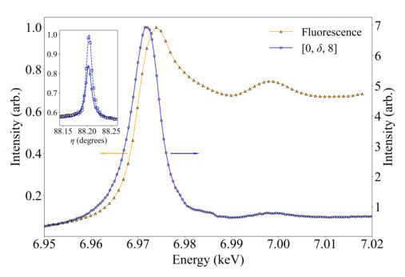
<figcaption class="paper-figure-caption"><b>Fig 1.</b> FIG. 3. The energy dependence of the (0, δm, 8) magnetic satellite intensity (blue), showing a large resonant enhance- ment at 6.9715 keV, just below the L3 edge of the known magnetic ion Eu2+ at 6.977 keV. For reference, the x-ray fluorescence measured away from the diffraction condition is shown (orange). Inset: Diffraction intensities of opposite po- larised circular light (dashed and solid lines, respectively). Both dataset were measured at Tbase, and normalized to the maximum resonant intensity at ψ = 250◦(see Fig. 7 for definiton of azimuthal angle ψ).</figcaption>
</figure>
<figure class="paper-figure-card">
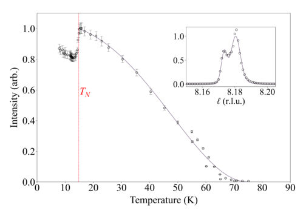
<figcaption class="paper-figure-caption"><b>Fig 2.</b> FIG. 1. Evolution of the (1, 1, 8.18) CDW diffraction in- tensity as function of temperature. Inset: An example the CDW intensity measured along k at Tbase = 7.5 K. The peak splitting was also observed for the (1, 1, 8) structural peak, suggesting it originates in structural inhomogeneities.</figcaption>
</figure>
<figure class="paper-figure-card">
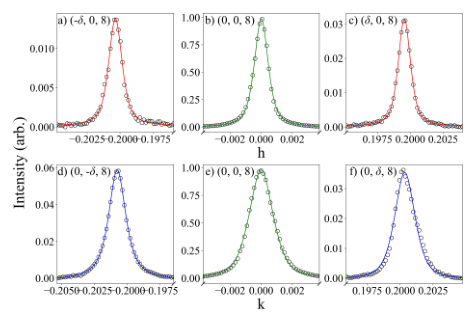
<figcaption class="paper-figure-caption"><b>Fig 3.</b> FIG. 2. The (0, 0, 8) structural diffraction intensity b) e) (green) and its four magnetic satellites a) c) (red) and d) f) (blue), measured in the h and k reciprocal space directions. The respective magnetic wave vector was measured to be δh = δk = 0.2002(4). Measurements were carried out at Tbase = 7.45 ± 0.08 K. The above colour code is adopted throughout the paper unless stated otherwise, to differentiate the two k- domains propagating along h and k, respectively. Note that the data were renormalized to the maximum intensity of the (0, 0, 8) peak measured along k.</figcaption>
</figure>
<figure class="paper-figure-card">
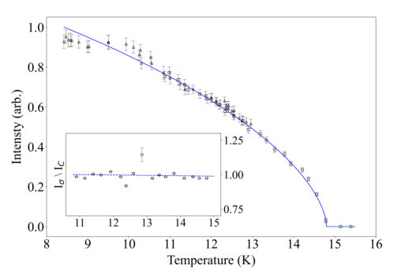
<figcaption class="paper-figure-caption"><b>Fig 4.</b> FIG. 4. The temperature evolution of the (0, 0.2, 8) magnetic satellite measured on cooling. Long-range magnetic order de- velops at TN = 14.8 K. Inset: the normalized ratio of inten- sities measured with linear (Iσ) and circularly polarised (IC) incident light.</figcaption>
</figure>
<figure class="paper-figure-card">
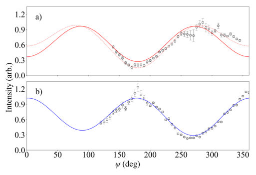
<figcaption class="paper-figure-caption"><b>Fig 5.</b> FIG. 5. The azimuthal dependence of the a) k1 = (-0.2, 0, 8) and b) k2 = (0, 0.2, 8) magnetic satellite intensities. Elliptical helix model fit is shown as solid red and blue lines. The helicoidal model fit is shown by the dashed line on panel a). The zero point in azimuth corresponds to a sample orientation for which the (1, 0, 0) reciprocal space vector points away from the source, and within the scattering plane.</figcaption>
</figure>
</div>

<p><strong>Summary.</strong> This experimental study uses resonant X-ray diffraction to characterize the coupled charge and spin ordering in Eu(Al1-xGa_x)4. The researchers found evidence for a Charge Density Wave and a complex magnetic structure below the Néel temperature. The work highlights the strong coupling between these two orders and details the specific helical nature of the magnetic moments in different crystal domains.</p>
<p><strong>Why it may be interesting.</strong> The strong coupling observed between charge and spin order in a topological magnet provides a rich platform for studying emergent quantum phenomena, which is relevant to understanding correlated electron physics in novel materials.</p>
<details>
<summary>Detailed structure</summary>
<p><strong>Main problem.</strong> The study investigates how light chemical substitution modifies the coupled charge and spin textures in the topological magnet Eu(Al1-xGa_x)4.</p>
<p><strong>Main result.</strong> The system exhibits strong coupling between the Charge Density Wave (CDW) and magnetic order, with the magnetic structure characterized as a single helical arrangement in the k2 domain and a tilted helicoid in the k1 domain below the Néel temperature.</p>
<p><strong>Method.</strong> Resonant X-ray diffraction experiments were performed at the Eu L3 edge, utilizing polarization analysis and azimuthal measurements to resolve both charge and spin modulations.</p>
<p><strong>Model / system.</strong> The physical system is the intermetallic topological magnet Eu(Al1-xGa_x)4, where the substitution of Al by Ga ($x=0.1$) is used to tune the electronic and magnetic properties. The analysis focuses on the interplay between CDW formation and long-range magnetic ordering.</p>
<p><strong>Key observables.</strong> CDW propagation vector (kCDW ~ (0, 0, 0.18)), magnetic satellite positions (k = (±δ_m, 0, 0) and (0, ±δ_m, 0)), and the ratio of intensities measured with linear vs. circularly polarized light.</p>
<p><strong>Important parameters / regimes.</strong> Temperature (especially the transition temperatures $\approx 75 	ext{ K}$ for CDW and $T_N = 14.8 	ext{ K}$ for magnetism), and the substitution concentration ($x=0.1$).</p>
<p><strong>Assumptions / limitations.</strong> The analysis assumes that the observed magnetic scattering can be modeled using elliptical helix or helicoidal structures, and that the temperature invariance of the polarization ratio suggests a single magnetic phase below $T_N$.</p>
<p><strong>Figures summary.</strong> Figures illustrate the temperature evolution of CDW intensity showing a sharp drop near 15 K, and show magnetic satellites in reciprocal space, with further analysis using azimuthal dependence to model the spin structure.</p>
<p><strong>Paper structure.</strong> The paper first establishes the presence of CDW and magnetic order, noting the coincidence of the CDW drop and $T_N$. It then uses azimuthal measurements to fit the magnetic satellite intensities, distinguishing between different types of helical spin arrangements in the two observed magnetic domains.</p>
</details>
<details>
<summary>Abstract</summary>
<p>We present the results of a resonant X-ray diffraction experiment, resolving both charge and spin textures in the intermetallic topological magnet Eu(Al$_{1-x}$Ga$_{x}$)$_4$, $x$ = 0.1. Below $\approx$ 75 K the system develops a charge density wave (CDW) with propagation vector kCDW ~ (0, 0, 0.18). The CDW order parameter grows monotonically on cooling until ~ 15 K, when a sudden decrease in the CDW amplitude occurs. Pairs of magnetic satellites of the (0, 0, 8) Bragg reflection corresponding to two distinct domains, k = ($\pm δ_\text{m}$, 0, 0), k2 = (0, $\pmδ_\text{m}$, 0), $δ_\text{m} = 0.2002(4)$ were studied at the Eu L3 edge, appearing below TN = 14.8 K. Our measurement of TN is exactly coincident with the sudden drop in the CDW amplitude, which suggests strong coupling between the charge and spin orders, as observed in other compounds of the Eu(Al$_{1-x}$Ga$_{x}$)$_4$ series. Azimuthal measurements revealed a single helical spin arrangement with an elliptical envelope of $μ_\text{Y}/μ_\text{Z}$ = 1.19(6) for the k2 domain, and a tilted helical (helicoidal) spin arrangement for the k1 domain, with $μ_\text{Y}/μ_\text{Z}$ = 1.14(4) and $μ_\text{X}/μ_\text{Z}$ = 0.20(2) that may be hidden for the k2 domain due to multiple subdomains. Temperature evolution of the magnetic satellite intensities in linear and circularly polarised light found the respective ratio to be invariant with temperature, suggesting a single magnetic phase below TN. This behaviour is unlike the x = 0 material, in which a spin density wave forms first, transitioning to a helical ground state on cooling through intermediate phases. Future theoretical work on the Eu electronic ground state, supported by related experiments, will help understand the effects of Ga substitution on the evolution of the magnetic structure.</p>
</details>
<p><sub><a href="#top">↑ back to top</a></sub></p>

<p><a id="paper-2606.03278"></a></p>
<h3 id="tailoring-pure-valley-zeeman-spin-orbit-coupling-in-wsemath392math-encapsulated-monolayer-graphene"><a href="http://arxiv.org/abs/2606.03278v1">Tailoring pure valley-Zeeman spin-orbit coupling in WSe$_2$-encapsulated monolayer graphene</a></h3>
<p><strong>Authors:</strong> Yaqing Han, Siqi Jiang, Jingkuan Xiao, Jiawei Jiang, Yulu Liu, Jiabei Huang, Yu Du, Di Zhang, Fuzhuo Lian, Wanting Xu, Siqin Wang, Kenji Watanabe, Takashi Taniguchi, Xiaoxiang Xi, Alexander S. Mayorov, Renjun Du, Kai Chang, Hongxin Yang, Lei Wang, Geliang Yu<br>
<strong>Type:</strong> both · <strong>Category:</strong> other · <strong>PDF:</strong> <a href="https://arxiv.org/pdf/2606.03278v1">https://arxiv.org/pdf/2606.03278v1</a><br>
<strong>Analysis basis:</strong> full PDF text, analyzed in chunks
<strong>Topic relevance:</strong> <code>spintronics-quantum-optics interface</code> <strong>3/5</strong> · <code>exotic spin models in light-matter</code> <strong>2/5</strong> · <code>analog quantum simulation</code> <strong>1/5</strong></p>
<div class="figure-strip-hint">↔ Scroll figures horizontally</div>
<div class="paper-figures-scroll">
<figure class="paper-figure-card">
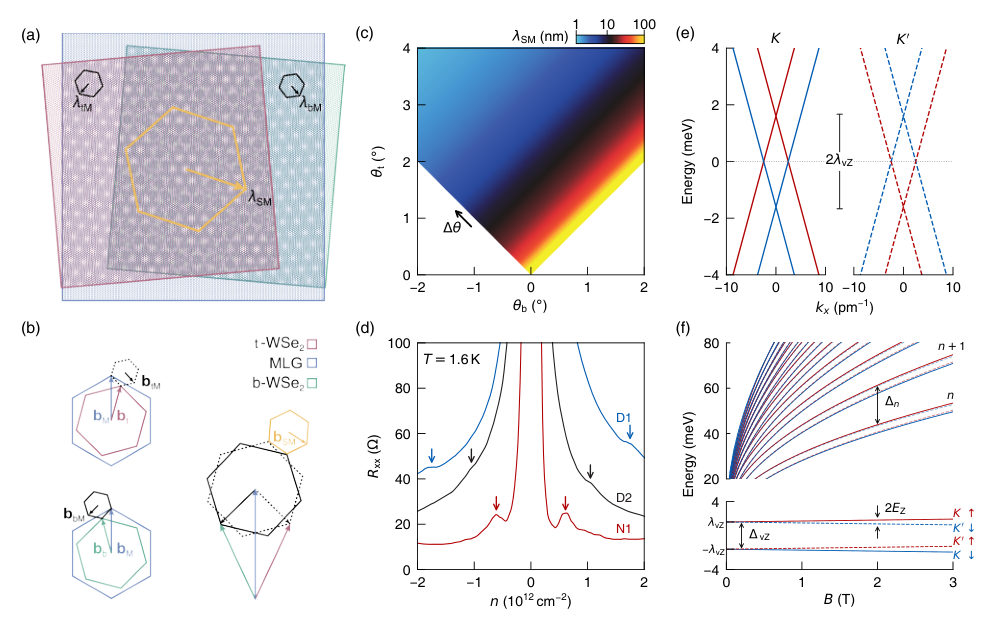
<figcaption class="paper-figure-caption"><b>Fig 1.</b> FIG. 1. (a) Schematic of the WSe2/MLG/WSe2 super-moiré lattice. Top- and bottom-WSe2 monolayers are twisted relative to MLG by θt and θb, constructing moiré superlattices with wavelengths of λtM and λbM, respectively. Their overlap forms a super-moiré lattice with λSM. (b) Schematic of Brillouin zones of top-WSe2 (red), MLG (blue) and bottom-WSe2 (green). The reciprocal vectors of the primary moiré (super-moiré) lattices are denoted by black (yellow) arrows. (c) Calculated λSM as functions of θb and θt for a small twist-angle between WSe2 layers ∆θ = |θt −θb|. (d) Rxx as a function of n in investigated devices measured at B = 0 T and T = 1.6 K. Arrows indicate the positions of SDPs. (e)...</figcaption>
</figure>
<figure class="paper-figure-card">
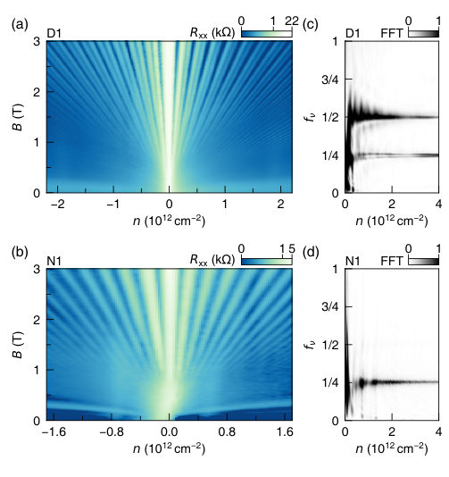
<figcaption class="paper-figure-caption"><b>Fig 2.</b> FIG. 2. (a),(b) Rxx as functions of n and B measured at D = 0 for the devices D1 and N1, respectively. (c),(d) FFT spectra obtained from the Landau fans shown in (a) and (b), respectively, plotted as functions of carrier density n and nor- malized frequency fν = f/(nϕ0). Here, f is the oscillation frequency calculated for each density in Tesla, and ϕ0 = h/e is the magnetic flux quantum.</figcaption>
</figure>
<figure class="paper-figure-card">
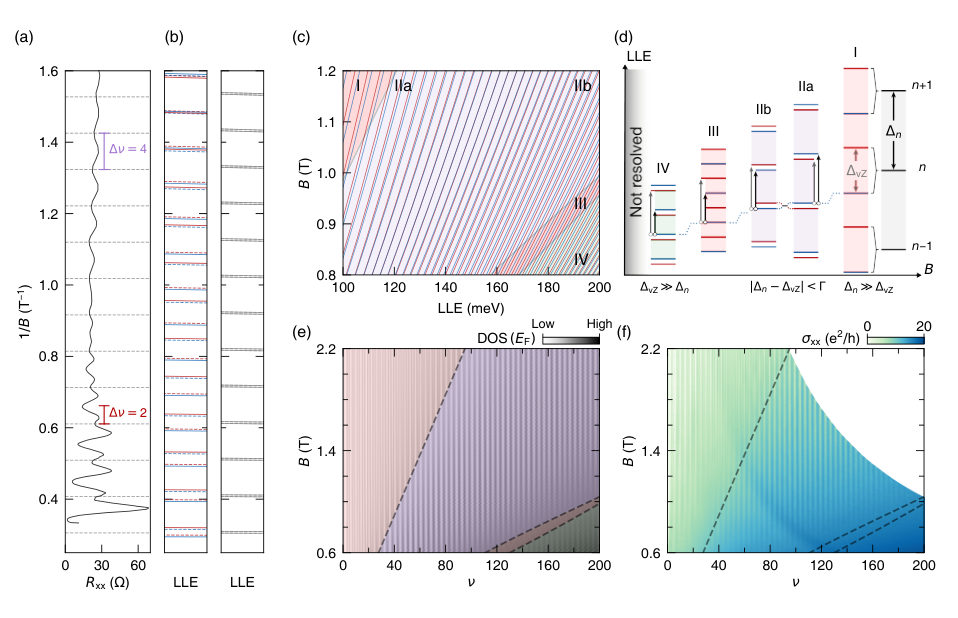
<figcaption class="paper-figure-caption"><b>Fig 3.</b> FIG. 3. (a) Rxx as a function of 1/B at n = 1.05 × 1012 cm−2, replotted from Fig. 2(a). The gray-dashed lines denote the integer quantum Hall sequence of LL filling factor ν = 4N, where the index N is an integer. (b) Calculated LL energy (LLE) as a function of 1/B at λvZ = 1.6 (left-panel) and 0 meV (right-panel), respectively. The color code (red and blue) represents the out-of-plane spin (up and down), and gray denotes the states of pristine MLG. Solid and dashed lines denote LLs from K and K′ valleys, respectively. (c) Calculated LLE as a function of B at λvZ = 1.6 meV. (d) Schematic of LLs as a function of B, depicting the competition between ∆vZ and ∆n. Only the LLs of the K valley are...</figcaption>
</figure>
<figure class="paper-figure-card">
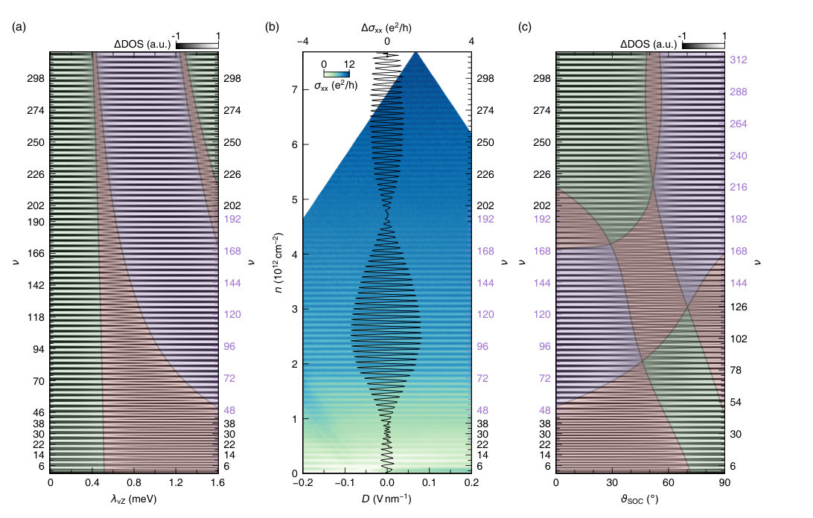
<figcaption class="paper-figure-caption"><b>Fig 4.</b> FIG. 4. (a) Calculated ∆DOS(EF) as functions of λvZ and ν at λR = 0 meV and B = 1 T. (b) Experimentally measured σxx as functions of D and n at B = 1 T. The line slice of SdH oscillations ∆σxx extracted from D = 0.07 V nm−1. (c) Calculated ∆DOS(EF) as functions of ϑSOC = arctan(λR/λvZ) and ν at λSOC = 1.6 meV and B = 1 T. ∆DOS(EF) and ∆σxx are obtained by subtracting the corresponding smooth background. The black and purple ticks on the y-axis denote that the quantization sequence is half-integer and integer, respectively. The shaded regions in (a) and (c) use the same color scheme as in Fig. 3.</figcaption>
</figure>
</div>

<p><strong>Summary.</strong> This research reports the successful experimental realization of pure valley-Zeeman spin-orbit coupling in graphene by sandwiching it between twisted WSe2 layers. By analyzing quantum oscillations and Landau level spectra, the authors demonstrate precise control over the SOC components, showing a transition between symmetry-broken and highly degenerate quantum Hall states. This work establishes a powerful platform for designing novel electronic properties in van der Waals heterostructures.</p>
<p><strong>Why it may be interesting.</strong> This work provides a clean, tunable platform for engineering fundamental spin-valley coupling in 2D materials, which is crucial for developing topological quantum devices and spintronics.</p>
<details>
<summary>Detailed structure</summary>
<p><strong>Main problem.</strong> The primary goal is to experimentally realize and control pure valley-Zeeman spin-orbit coupling (SOC) in monolayer graphene using a van der Waals heterostructure.</p>
<p><strong>Main result.</strong> The authors successfully demonstrated pure valley-Zeeman SOC via WSe2/graphene/WSe2 encapsulation, evidenced by the reordering of Landau levels and the ability to tune the SOC strength and even quench it.</p>
<p><strong>Method.</strong> The study combines magneto-transport measurements (Shubnikov-de Haas effect, $
ho_{xx}$ vs $B$) with theoretical modeling (tight-binding) and Fast Fourier Transforms (FFT) analysis of quantum oscillations.</p>
<p><strong>Model / system.</strong> The system is graphene encapsulated between two parallel twisted WSe2 monolayers. The physics is governed by the Dirac Hamiltonian perturbed by proximity-induced SOC terms, specifically the valley-Zeeman ($\lambda_{vZ}$) and Rashba ($\lambda_R$) components.</p>
<p><strong>Key observables.</strong> Landau level reordering, symmetry-enforced transitions between twofold and fourfold degenerate quantum Hall states, frequency splitting ($\Delta f_
u$) in FFT spectra, and the effective SOC strength ($\lambda_{SOC}$).</p>
<p><strong>Important parameters / regimes.</strong> Twist angle ($\Delta	heta$), magnetic field ($B$), carrier density ($n$), and the relative strengths of the SOC components ($\lambda_{vZ}$ vs $\lambda_R$).</p>
<p><strong>Assumptions / limitations.</strong> The proximity effect is modeled by adding specific SOC terms to the graphene Hamiltonian, and the electronic structure is analyzed using tight-binding models.</p>
<p><strong>Figures summary.</strong> Figures illustrate the super-moiré lattice structure and calculated LL spectra for pure valley-Zeeman SOC, alongside $
ho_{xx}$ vs $B$ measurements showing phase transitions between symmetry-broken and fourfold-degenerate states.</p>
<p><strong>Paper structure.</strong> The paper progresses by establishing the platform (WSe2/graphene/WSe2), theoretically modeling the SOC components, and then presenting experimental evidence from transport measurements (SdH, FFT) to confirm the selective realization and tunability of the pure valley-Zeeman SOC regime.</p>
</details>
<details>
<summary>Abstract</summary>
<p>Engineering proximity effects in twisted van der Waals heterostructures offers a powerful platform for designing electronic properties. While theoretical predictions of quantum interference in transition metal dichalcogenide-encapsulated graphene can selectively control the spin-orbit coupling component, experimental realizations have remained elusive. Here, we report pure valley-Zeeman spin-orbit coupling in monolayer graphene, achieved by encapsulation between two parallel twisted WSe$_2$ monolayers. We observed a symmetry-enforced reordering of Landau levels, which is driven by the competition between the fixed valley-Zeeman energy and the magnetic-field-dependent cyclotron energy. This reordering is characterized by a transition from symmetry-broken states in the quantum Hall effect to a restored fourfold degeneracy with integer or half-integer quantum Hall sequences. We also demonstrate the ability to completely quench the proximity spin-orbit coupling by tuning the encapsulated geometry.</p>
</details>
<p><sub><a href="#top">↑ back to top</a></sub></p>

<p><a id="paper-2606.02793"></a></p>
<h3 id="skyrmion-and-meron-phases-induced-by-spin-phonon-coupling"><a href="http://arxiv.org/abs/2606.02793v1">Skyrmion and meron phases induced by spin-phonon coupling</a></h3>
<p><strong>Authors:</strong> E. Iroulart, F. A. Gómez Albarracín, H. Diego Rosales<br>
<strong>Type:</strong> theory · <strong>Category:</strong> statistical mechanics · <strong>PDF:</strong> <a href="https://arxiv.org/pdf/2606.02793v1">https://arxiv.org/pdf/2606.02793v1</a><br>
<strong>Analysis basis:</strong> full PDF text, analyzed in chunks
<strong>Topic relevance:</strong> <code>analog quantum simulation</code> <strong>3/5</strong> · <code>exotic spin models in light-matter</code> <strong>1/5</strong> · <code>methods for driven-dissipative</code> <strong>1/5</strong></p>
<div class="figure-strip-hint">↔ Scroll figures horizontally</div>
<div class="paper-figures-scroll">
<figure class="paper-figure-card">
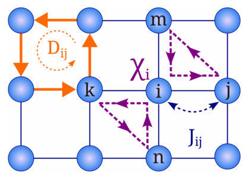
<figcaption class="paper-figure-caption"><b>Fig 1.</b> FIG. 1. Illustration of the square lattice, indicating near- est neighbors exchange Jij between sites (i, j) (blue) and Dzyaloshinskii-Moriya interaction Dij. Purple dashed arrows indicate the orientation used to compute the scalar chirality (Eq. 9) from spins at sites (i, j, m).</figcaption>
</figure>
<figure class="paper-figure-card">
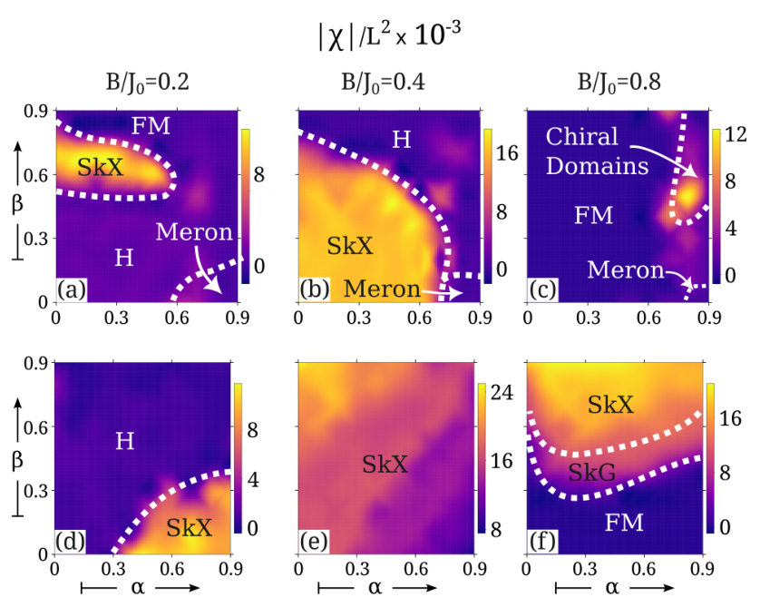
<figcaption class="paper-figure-caption"><b>Fig 2.</b> FIG. 2. (Color online) Density plots of the absolute normalized chirality |χ|/L2 as a function of α and β for magnetic fields B/J0 = 0.2, 0.4 and 0.8 at the lowest simulated temperature T/J0 = 1.2×10−3. Top row: Einstein site-phonon model. Bottom row: Bond-phonon model.</figcaption>
</figure>
<figure class="paper-figure-card">
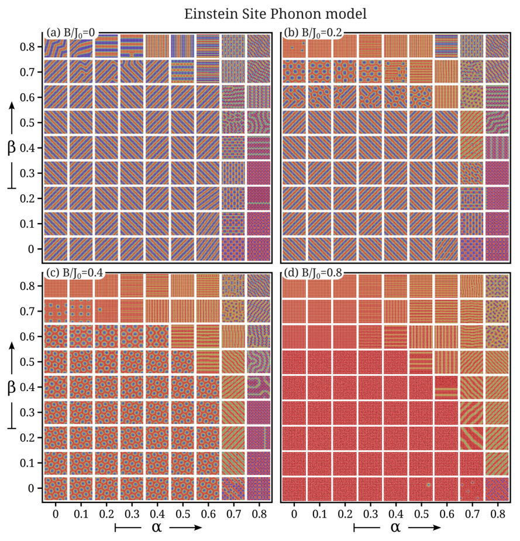
<figcaption class="paper-figure-caption"><b>Fig 3.</b> FIG. 3. (Color online) Representative magnetic configurations for the Einstein site-phonon model as a function of α and β ∈[0, 0.8] at the lowest simulated temperature T/J0 = 1.2 × 10−3. Panels correspond to magnetic fields (a) B/J0 = 0, (b) 0.2, (c) 0.4, and (d) 0.8. The grid illustrates the evolution of magnetic textures across parameter space, including helical (H), skyrmion crystal (SkX), meron–antimeron, and mixed phases.</figcaption>
</figure>
<figure class="paper-figure-card">
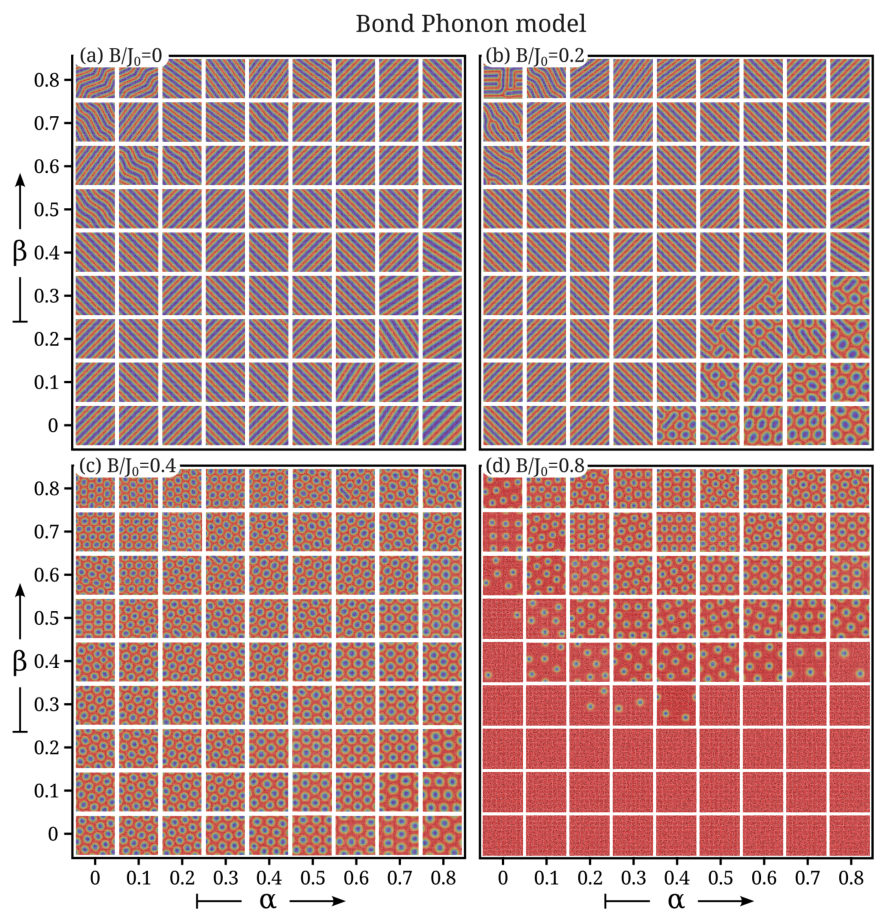
<figcaption class="paper-figure-caption"><b>Fig 4.</b> FIG. 4. (Color online) Representative magnetic configurations for the bond-phonon model as a function of α and β ∈[0, 0.8] at the lowest simulated temperature T/J0 = 1.2 × 10−3. Panels correspond to magnetic fields (a) B/J0 = 0, (b) 0.2, (c) 0.4, and (d) 0.8. Compared to the ESP model, the BP coupling predominantly stabilizes skyrmion textures over a wider region of parameter space, with fewer competing phases.</figcaption>
</figure>
<figure class="paper-figure-card">
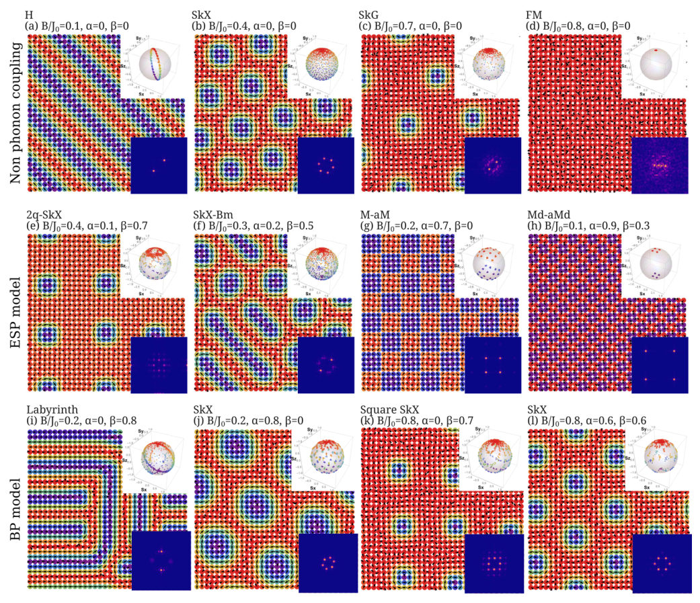
<figcaption class="paper-figure-caption"><b>Fig 5.</b> FIG. 5. (Color online) Representative magnetic configurations under different magnetic fields and spin-phonon coupling schemes. The first row (panels (a)-(d)) shows the reference model without SP coupling (α = β = 0) for B/J0 = 0.0, 0.4, 0.6, and 0.8, corresponding to: (a) helical phase (H), (b) hexagonal skyrmion crystal (SkX), (c) skyrmion gas (SkG), and (d) fully polarized phase (FM). The second row (panels (e)-(h)) displays configurations in the ESP model, illustrating phases induced by SP coupling, including: (e) square double-q skyrmion crystal (2q-SkX), (f) skyrmion–bimeron (SkX-Bm) phase, (g) meron- antimeron crystal (M-aM), and (h) compact meron-antimeron (CM-aM) phase. The third...</figcaption>
</figure>
</div>

<p><strong>Summary.</strong> This work explores how coupling between magnetic spins and lattice vibrations (spin-phonon coupling) alters the magnetic ground state of chiral magnets. Using Monte Carlo simulations on two distinct coupling models (ESP and BP), the authors demonstrate that lattice effects can stabilize novel topological phases, such as meron-antimeron crystals, and tune the transition between different skyrmion lattice structures.</p>
<p><strong>Why it may be interesting.</strong> The explicit inclusion of lattice degrees of freedom (phonons) provides a concrete, tunable mechanism for controlling topological magnetic order, which is highly relevant for understanding emergent quantum phenomena in solid-state systems.</p>
<details>
<summary>Detailed structure</summary>
<p><strong>Main problem.</strong> The study investigates how spin-phonon (SP) coupling modifies magnetic interactions and the resulting topological spin textures, such as skyrmions and merons, in chiral magnets.</p>
<p><strong>Main result.</strong> Lattice effects provide a simple mechanism to tune topological magnetic phases, stabilizing exotic structures like M-aM crystals and distorting conventional skyrmion lattices into square arrangements.</p>
<p><strong>Method.</strong> The research employs Monte Carlo simulations to analyze the effective Hamiltonians derived from two simplified spin-phonon coupling models: Einstein site-phonon (ESP) and bond-phonon (BP).</p>
<p><strong>Model / system.</strong> The system is a two-dimensional skyrmion model on a square lattice, starting from a Heisenberg model Hamiltonian modified by SP coupling terms. The analysis compares the effects of site-based (ESP) versus bond-based (BP) phonon interactions.</p>
<p><strong>Key observables.</strong> Local and total scalar chirality ($\chi$), topological charge ($Q$), and the structure factor ($S_{\perp}(\mathbf{q})$) are used to characterize the magnetic phases.</p>
<p><strong>Important parameters / regimes.</strong> The coupling strengths ($\alpha, eta$) and the external magnetic field ($B/J_0$) are the key tuning parameters explored in the phase diagrams.</p>
<p><strong>Assumptions / limitations.</strong> The analysis assumes that lattice distortions modify the magnetic interactions (Exchange and DM) linearly, and it compares results from two distinct, simplified models for SP coupling (ESP vs. BP).</p>
<p><strong>Figures summary.</strong> Figures illustrate phase diagrams showing stabilization regions for various textures (e.g., 2q-SkX, M-aM) as a function of coupling parameters, and density plots visualizing chirality in different phases.</p>
<p><strong>Paper structure.</strong> The paper systematically compares the predictions of the ESP and BP models, detailing how the resulting effective Hamiltonians lead to different topological phases, culminating in a discussion of how lattice effects tune the magnetic ground state.</p>
</details>
<details>
<summary>Abstract</summary>
<p>In chiral magnets, magnetic skyrmions are typically stabilized by the competition between exchange and Dzyaloshinskii-Moriya interactions under an external magnetic field, while the role of lattice degrees of freedom has received comparatively less attention. Here we study how spin-phonon (SP) coupling modifies magnetic interactions and the resulting spin textures in a two-dimensional skyrmion model in the square lattice. Using Monte Carlo simulations, we compare two simplified models describing the SP coupling: the Einstein site-phonon (ESP) and bond-phonon (BP) models. We find that ESP coupling stabilizes skyrmion crystals in field regimes that are topologically trivial in the uncoupled model and also induces additional textures, including meron-antimeron (M-aM) crystals and mixed skyrmion-bimeron (SkX-Bm) phases. Furthermore, for sufficiently strong phonon coupling, the conventional triple-$\textbf{q}$ hexagonal skyrmion lattice is distorted into a double-$\textbf{q}$ square skyrmion lattice. Overall, our results show that lattice effects provide a simple mechanism to tune topological magnetic phases.</p>
</details>
<p><sub><a href="#top">↑ back to top</a></sub></p>

<p><a id="paper-2606.02766"></a></p>
<h3 id="spin-math411math-model-with-competing-interactions-on-diamond-decorated-lattices"><a href="http://arxiv.org/abs/2606.02766v1">Spin-$s$ model with competing interactions on diamond-decorated lattices</a></h3>
<p><strong>Authors:</strong> D. V. Dmitriev, V. Ya. Krivnov, O. A. Vasilyev<br>
<strong>Type:</strong> theory · <strong>Category:</strong> statistical mechanics · <strong>PDF:</strong> <a href="https://arxiv.org/pdf/2606.02766v1">https://arxiv.org/pdf/2606.02766v1</a><br>
<strong>Analysis basis:</strong> full PDF text, analyzed in chunks
<strong>Topic relevance:</strong> <code>analog quantum simulation</code> <strong>3/5</strong> · <code>entanglement &amp; information structure</code> <strong>1/5</strong> · <code>exotic spin models in light-matter</code> <strong>1/5</strong></p>
<div class="figure-strip-hint">↔ Scroll figures horizontally</div>
<div class="paper-figures-scroll">
<figure class="paper-figure-card">
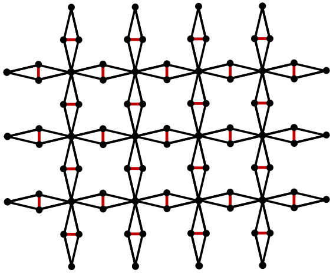
<figcaption class="paper-figure-caption"><b>Fig 1.</b> FIG. 1. Spin-s Heisenberg model on the ideal diamond-decorated square lattice. Black lines denote</figcaption>
</figure>
<figure class="paper-figure-card">
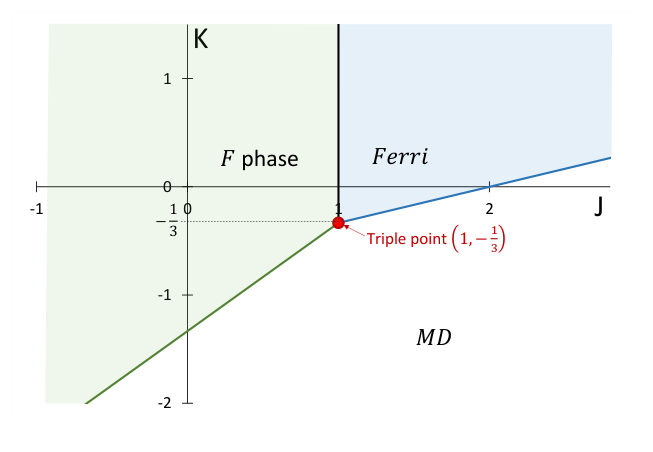
<figcaption class="paper-figure-caption"><b>Fig 2.</b> FIG. 3. Ground state phase diagram of the ideal diamond-decorated spin-1 model in the (J, K)</figcaption>
</figure>
<figure class="paper-figure-card">
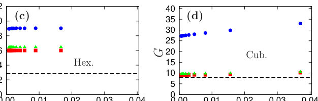
<figcaption class="paper-figure-caption"><b>Fig 3.</b> FIG. 4. The values of G = W 1/N as a function of 1/N for (a) square; (b) triangular; (c) honeycomb;</figcaption>
</figure>
<figure class="paper-figure-card">
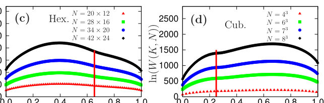
<figcaption class="paper-figure-caption"><b>Fig 4.</b> FIG. 5. Contributions to the partition function ln W(K, N) (Eq. (37)) at the triple point as a</figcaption>
</figure>
<figure class="paper-figure-card">
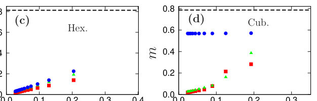
<figcaption class="paper-figure-caption"><b>Fig 5.</b> FIG. 6. Magnetization per spin calculated according to Eq. (48) as a function of N−1/2 for (a)</figcaption>
</figure>
</div>

<p><strong>Summary.</strong> This theoretical work analyzes a complex spin model on diamond-decorated lattices exhibiting competing magnetic interactions. By exploiting local spin conservation, the authors map out a phase diagram featuring three distinct magnetic phases. The key findings highlight that the system achieves maximal ground state degeneracy and high residual entropy at a multicritical point, suggesting applications in quantum cooling technologies.</p>
<p><strong>Why it may be interesting.</strong> The study of high residual entropy and macroscopic degeneracy at multicritical points is highly relevant to understanding quantum phase transitions and the potential for quantum thermal engines.</p>
<details>
<summary>Detailed structure</summary>
<p><strong>Main problem.</strong> The paper investigates the ground state properties, magnetization, and low-temperature thermodynamics of a spin-$s$ model with competing ferromagnetic and antiferromagnetic interactions on diamond-decorated lattices.</p>
<p><strong>Main result.</strong> The system exhibits rich phase diagrams (F, Ferri, MD) meeting at a multicritical point where the ground state degeneracy is maximal, leading to high residual entropy.</p>
<p><strong>Method.</strong> The analysis combines exact diagonalization for the 1D chain with mapping the 2D/3D problem onto a bond percolation framework for calculating ground state degeneracy and magnetization.</p>
<p><strong>Model / system.</strong> The model is a spin-$s$ Heisenberg model defined on diamond-decorated lattices, incorporating bilinear and higher-order exchange interactions. Local conservation of the composite spin on each diamond diagonal allows for the exact analysis of local energy minimization.</p>
<p><strong>Key observables.</strong> Ground state degeneracy ($W$), residual entropy per spin ($S_0$), low-temperature magnetization ($m$), and the excitation spectrum (gapped/gapless).</p>
<p><strong>Important parameters / regimes.</strong> The spin values ($s, \sigma$), the coupling ratios ($J, K$), and the lattice dimensionality (1D chain, 2D, 3D).</p>
<p><strong>Assumptions / limitations.</strong> The analysis relies on the local conservation of the composite spin on each diamond unit, and for higher dimensions, the problem is mapped onto a bond percolation framework.</p>
<p><strong>Figures summary.</strong> Figures illustrate the lattice structure and couplings (Fig. 1, 2). Phase diagrams show the three competing phases (F, Ferri, MD) meeting at a triple point (Fig. 3). Further figures detail magnetization curves and percolation exponents (Fig. 4, 5, 6).</p>
<p><strong>Paper structure.</strong> The paper first establishes the general formalism using local spin conservation. It then analyzes the pure Heisenberg case, detailing $2\sigma$ transitions. The focus shifts to the $s=\sigma=1$ case, mapping the phase diagram and calculating degeneracy/entropy. Finally, it analyzes magnetization and specific heat across different lattice dimensions and critical lines.</p>
</details>
<details>
<summary>Abstract</summary>
<p>We investigate the ground state properties, magnetization, and low-temperature thermodynamics of the ferromagnetic-antiferromagnetic spin-$s$ model on diamond-decorated lattices with ideal diamond units, incorporating bilinear Heisenberg and higher-order exchange interactions between diagonal spins-$σ$. Local conservation of the composite spin on each diamond diagonal enables exact analysis. For the pure Heisenberg case, the system undergoes a series of $2σ$ transitions between monomer-dimer (MD), ferrimagnetic (Ferri) and ferromagnetic (F) phases with different optimal composite spin values as the coupling ratio varies. In the presence of higher-order interactions, a multicritical point exists where the states with all possible values of composite spin are degenerate, leading to maximal ground state degeneracy. The case $s=σ=1$ with bilinear and biquadratic interactions is studied in detail. Its phase diagram comprises three phases - F, Ferri and MD, which meet at a triple point. On the phase boundaries, the ground state becomes macroscopically degenerate. For the diamond chain, we calculate the ground state degeneracy exactly; for higher dimensions, the problem maps onto a bond percolation framework, solved numerically. The residual entropy per spin reaches up to $60\%$ of the maximal value, peaking at the triple point. Low-temperature magnetization curves in external magnetic fields exhibit plateaus and jumps. The excitation spectrum is gapped in the MD phase, gapless in the F phase, and resembles that of the Lieb-Mattis ferrimagnet in the Ferri phase. The high residual entropy suggests potential applications in ultra-low-temperature cooling and quantum thermal machines.</p>
</details>
<p><sub><a href="#top">↑ back to top</a></sub></p>

<p><a id="paper-2606.03908"></a></p>
<h3 id="spin-chiral-electron-phonon-coupling-in-metallic-strontium-titanate"><a href="http://arxiv.org/abs/2606.03908v1">Spin-chiral electron-phonon coupling in metallic strontium titanate</a></h3>
<p><strong>Authors:</strong> N. Somun, L. Rogić, I. Khayr, E. Tafra, M. Basletić, A. Kundu, J. Dzian, F. Le Mardele, M. Orlita, M. Greven, B. Büchner, A. Alfonsov, M. N. Gastiasoro, A. Klein, D. Pelc<br>
<strong>Type:</strong> both · <strong>Category:</strong> strongly correlated electrons · <strong>PDF:</strong> <a href="https://arxiv.org/pdf/2606.03908v1">https://arxiv.org/pdf/2606.03908v1</a><br>
<strong>Analysis basis:</strong> full PDF text, analyzed in chunks
<strong>Topic relevance:</strong> <code>spintronics-quantum-optics interface</code> <strong>3/5</strong> · <code>exotic spin models in light-matter</code> <strong>2/5</strong></p>
<div class="figure-strip-hint">↔ Scroll figures horizontally</div>
<div class="paper-figures-scroll">
<figure class="paper-figure-card">
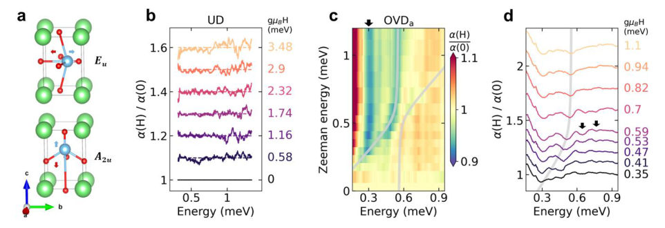
<figcaption class="paper-figure-caption"><b>Fig 1.</b> Figure 1 | Magnetic field effects on soft polar phonons in STO. a, Sketch of atomic displacements for the two softest transverse optic polar phonon modes in the tetragonal phase of STO, with Eu and A2u symmetry; the displacements correspond to antiphase motion of the titanium atom and oxygen cage (Slater mode). b, Magneto-optical absorption across the Eu phonon in undoped (UD) insulating STO in magnetic fields up to H = 30 T, at 1.3 K and normalized by the zero-field absorption; the field is expressed as the Zeeman energy 𝐸𝑍= 𝑔𝜇𝐵𝐻 using the free- electron gyromagnetic ratio g = 2. We do not observe any changes within the noise, which puts an upper limit on the phonon magnetic moment of...</figcaption>
</figure>
<figure class="paper-figure-card">
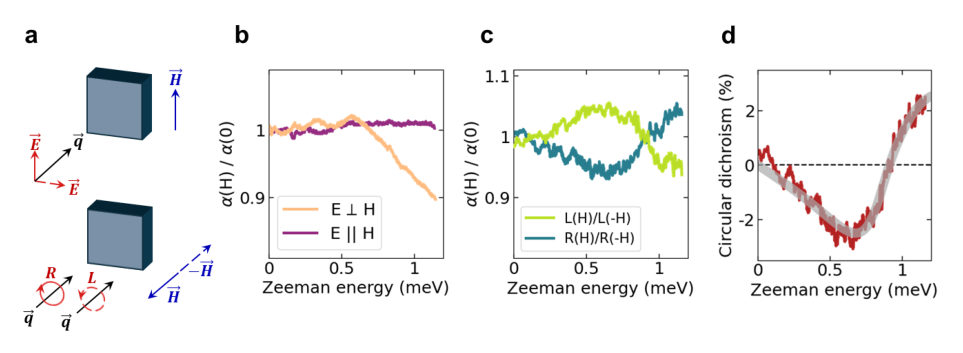
<figcaption class="paper-figure-caption"><b>Fig 2.</b> Figure 2 | Effects of light polarization on the magneto-optical response of metallic STO. a, Sketch of the experimental geometry for linear and circularly polarized light. H is the external magnetic field, q is the light propagation direction, E the electric field, and R and L denote left- and right-hand circularly polarized light. b, Magneto-optical absorption for light linearly polarized perpendicular and along the direction of the magnetic field, measured at photon energy 1 meV for sample OVDb with carrier concentration 7.2 ⋅1018 cm-3. A field-induced change is only observed in the perpendicular direction, in line with theoretical predictions. c, Absorption of circularly polarized light...</figcaption>
</figure>
<figure class="paper-figure-card">
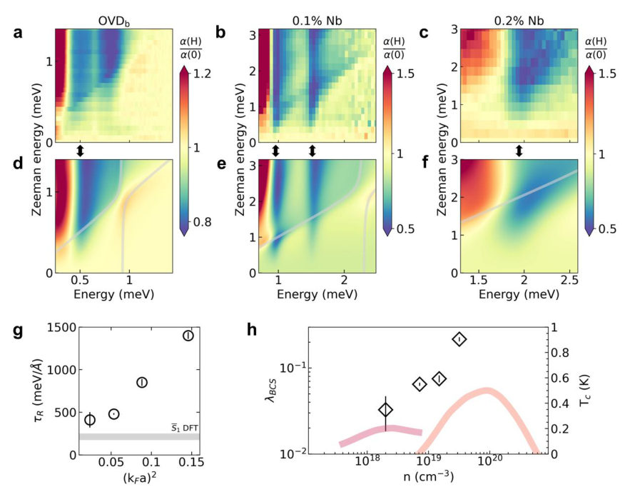
<figcaption class="paper-figure-caption"><b>Fig 3.</b> Figure 3 | Doping dependence of the magneto-optical response of metallic STO. a-c, Data for samples with three different electron concentrations: 7.2 ⋅1018 cm-3 (OVDb), 1.5 ⋅1019 cm-3 (0.1% Nb-Ti substitution) and 3.2 ⋅1019 cm-3 (0.2% Nb-Ti substitution). In all cases, the hybridized phonon-spin-flip chiral excitations partially overlap with plasma absorption edges (blue vertical features around 0.5 meV in (a), 1 and 1.6 meV in (b) and 2 meV in (c)), but they are clearly visible as sloped lines below the anticrossing point, especially in (a) and (b). d-f, Colormaps: fits of theoretical magneto-optical absorption to the data in (a-c), showing excellent agreement (see Methods for details of...</figcaption>
</figure>
</div>

<p><strong>Summary.</strong> This work reveals a previously unappreciated, direct spin-mediated coupling between conduction electrons and polar phonons in strontium titanate. Using magneto-optical measurements, the authors quantify this coupling, finding it is strong enough to explain the material's superconductivity. This suggests that spin-orbit coupling plays a crucial role in determining electronic properties in polar oxides.</p>
<p><strong>Why it may be interesting.</strong> The discovery of a spin-mediated EPC mechanism provides a novel coupling channel that can be relevant to understanding superconductivity and spintronics in polar materials, bridging concepts from condensed matter magnetism and superconductivity.</p>
<details>
<summary>Detailed structure</summary>
<p><strong>Main problem.</strong> The paper investigates the role of electronic spin in electron-phonon coupling (EPC), proposing a direct spin-mediated coupling mechanism contrary to conventional assumptions.</p>
<p><strong>Main result.</strong> A strong spin-mediated EPC was observed in metallic strontium titanate, generating chiral phonon modes whose coupling strength is large enough to potentially explain superconductivity in the material.</p>
<p><strong>Method.</strong> The study combines far-infrared light absorption measurements in a magnetic field (experiment) with theoretical modeling using Rashba-like coupling Hamiltonians (theory).</p>
<p><strong>Model / system.</strong> The model system is Strontium Titanate (STO), studied in its metallic state via doping. The theoretical framework involves a Rashba-like EPC Hamiltonian interacting with transverse polar phonons.</p>
<p><strong>Key observables.</strong> Spin-phonon hybridization signatures in optical absorption spectra, Magnetic Circular Dichroism (CD) response, and the electron-phonon coupling strength ($    au_R$).</p>
<p><strong>Important parameters / regimes.</strong> The coupling strength ($    ilde{\lambda}<em BCS>R$), carrier concentration (e.g., OVDb, 0.1% Nb), and the BCS coupling parameter ($\lambda</em>$).</p>
<p><strong>Assumptions / limitations.</strong> Approximations include assuming a simple antiphase oscillation for atomic displacement and simplifying the electronic dispersion (e.g., parabolic dispersion).</p>
<p><strong>Figures summary.</strong> Figures show evidence of hybridized spin-phonon excitations in magneto-optical spectra, demonstrating polarization and doping dependence, and confirming the chiral nature of the coupling.</p>
<p><strong>Paper structure.</strong> The paper progresses by first establishing the existence of the spin-mediated EPC via optical measurements, then quantifying its dependence on carrier concentration, and finally relating the coupling strength to superconducting parameters.</p>
</details>
<details>
<summary>Abstract</summary>
<p>Electron-phonon coupling (EPC) - the interaction between conduction electrons and quantized atomic vibrations - plays a central role in condensed matter physics and determines some of the most important properties of materials, such as electrical resistivity and superconductivity. Conventionally, EPC is assumed to be induced by the ionic electrostatic background, and electronic spin plays no role in the process. In stark contrast with this view, here we uncover a direct spin-mediated coupling mechanism between electrons and transverse polar phonons in a metal. Using far-infrared light absorption measurements of the model system SrTiO$_3$ in a magnetic field, we observe a strong spin-mediated EPC that is quantitatively consistent with recent theoretical predictions, and that generates chiral phonon modes with large effective magnetic moments. The extracted coupling strength is in good agreement with ab initio estimates and sufficiently high to explain superconductivity in SrTiO$_3$, thereby resolving a long-standing conundrum. Spin-chiral EPC should generically appear in all metals with polar phonons, and the present work could be of relevance to spintronics applications and to uncovering the origins of superconductivity in layered materials, metals with Dirac points in their electronic dispersions, and nearly ferroelectric superconductors.</p>
</details>
<p><sub><a href="#top">↑ back to top</a></sub></p>

<p><a id="paper-2606.03898"></a></p>
<h3 id="squeezed-state-semi-device-independent-quantum-randomness-generation"><a href="http://arxiv.org/abs/2606.03898v1">Squeezed-state semi-device-independent quantum randomness generation</a></h3>
<p><strong>Authors:</strong> Hamid Tebyanian<br>
<strong>Type:</strong> theory · <strong>Category:</strong> quantum information and computing · <strong>PDF:</strong> <a href="https://arxiv.org/pdf/2606.03898v1">https://arxiv.org/pdf/2606.03898v1</a><br>
<strong>Analysis basis:</strong> full PDF text, analyzed in chunks
<strong>Topic relevance:</strong> <code>quantum measurements</code> <strong>3/5</strong> · <code>entanglement &amp; information structure</code> <strong>2/5</strong></p>
<div class="figure-strip-hint">↔ Scroll figures horizontally</div>
<div class="paper-figures-scroll">
<figure class="paper-figure-card">
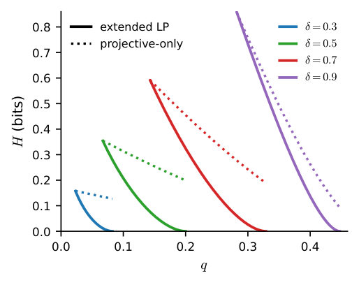
<figcaption class="paper-figure-caption"><b>Fig 1.</b> FIG. 1. Extended-LP closed form Hext Sh = r · h(p) (solid) and projective-only LP value h(pproj) (dotted), on the rate- positive interval q ∈(qb, qz) at δ ∈{0.3, 0.5, 0.7, 0.9}.</figcaption>
</figure>
<figure class="paper-figure-card">
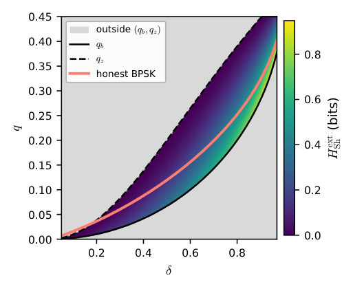
<figcaption class="paper-figure-caption"><b>Fig 2.</b> FIG. 2. Hext Sh (δ, q) on the rate-positive interior q ∈(qb, qz). Curves: qb (solid black), qz (dashed black), honest BPSK q = (1 −erf√2µeff)/2 at δ = e−2µeff (salmon). Gray: outside the displayed positive-rate branch; below qb the observation is outside the feasible moment region, while above qz the de- terministic/projective zero-cost decomposition gives the rate- zero plateau.</figcaption>
</figure>
<figure class="paper-figure-card">
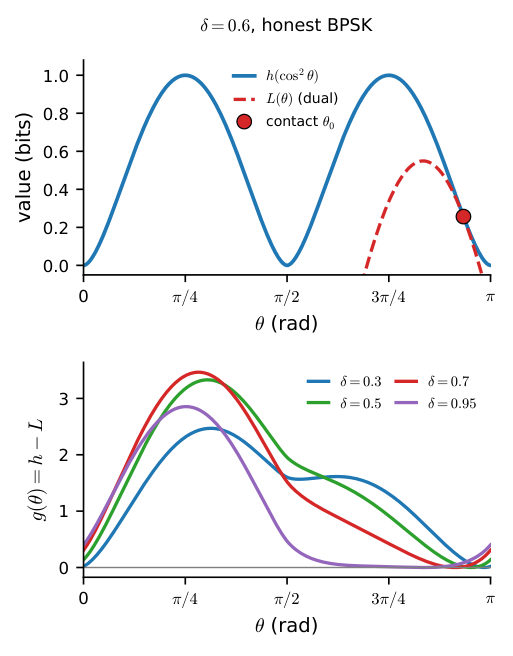
<figcaption class="paper-figure-caption"><b>Fig 3.</b> FIG. 3. Top: h(cos2 θ) (solid) and dual witness Lδ,q(θ) (dashed) over the full angular range θ ∈[0, π] at δ = 0.6 for the honest BPSK observation, using the active branch θ0 = π −arccos √p ∈(π/2, π). Filled marker: tangent con- tact at θ0. Bottom: residual g(θ) = h(cos2 θ) −Lδ,q(θ) at δ ∈{0.3, 0.5, 0.7, 0.95} for the honest (nominal) BPSK obser- vation.</figcaption>
</figure>
<figure class="paper-figure-card">
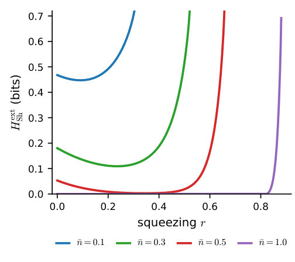
<figcaption class="paper-figure-caption"><b>Fig 4.</b> FIG. 4. Hext Sh along the honest BPSK locus vs squeezing r, at fixed ¯n ∈{0.1, 0.3, 0.5, 1.0}; lossless source. Each curve runs from r = 0 to rmax(¯n) = sinh−1 √¯n where N →0. The regime µeff &lt; 0.019 in which Hext Sh is an upper bound on Hcert rather than the certified rate occurs only on the extreme high- r tails, below the BPSK-meaningful cutoff N = 0.05, and is not used for any certified operating point.</figcaption>
</figure>
<figure class="paper-figure-card">
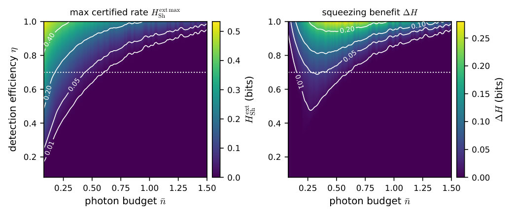
<figcaption class="paper-figure-caption"><b>Fig 5.</b> FIG. 5. Left: maximum certified rate Hext Sh max(¯n, η) := maxr Hext Sh subject to N ≥0.05 and the dual-feasibility condition m2(δ, q; 5 × 10−3) ≥0. Right: additive squeezing benefit ∆H := Hext Sh max −Hext Sh |r=0. Honest BPSK observation under Eq. (5). Dotted line: η = 0.7.</figcaption>
</figure>
</div>

<p><strong>Summary.</strong> This work derives a precise, closed-form upper bound for the rate of quantum randomness generation under semi-device-independent assumptions. By correctly solving the full POVM optimization, the authors correct previous overestimations and analyze how squeezing affects the achievable randomness rate. This is crucial for designing practical, high-security quantum random number generators.</p>
<p><strong>Why it may be interesting.</strong> It provides rigorous, quantifiable bounds on randomness extraction from quantum sources, which is a core topic in quantum information theory and quantum optics.</p>
<details>
<summary>Detailed structure</summary>
<p><strong>Main problem.</strong> The paper investigates the theoretical limit for generating quantum randomness in a semi-device-independent setting.</p>
<p><strong>Main result.</strong> A closed-form, unconditional upper bound for the certified asymptotic Shannon rate is derived, which is shown to be tight on a numerically verified dual-feasibility region.</p>
<p><strong>Method.</strong> The problem is formulated as a Linear Program (LP) over binary POVMs, requiring the inclusion of deterministic extreme points for an accurate rate calculation.</p>
<p><strong>Model / system.</strong> The model uses a trusted binary pure-state source and an untrusted binary detector whose side information is classical, specifically tested with squeezed-coherent BPSK sources.</p>
<p><strong>Key observables.</strong> Certified asymptotic i.i.d. Shannon rate ($H_{	ext{cert}}$), Gram overlap ($\delta$), and single-symbol error probability ($q$).</p>
<p><strong>Important parameters / regimes.</strong> Squeezing parameter ($r$), photon budget ($ar{n}$), and the error probability $q$ relative to critical thresholds ($q_b, q_z$).</p>
<p><strong>Assumptions / limitations.</strong> The adversary's side information ($\lambda$) is assumed to be classical; the rate formula is an upper bound, though tight in the verified region.</p>
<p><strong>Figures summary.</strong> Figures illustrate the comparison between the extended LP closed form and projective-only treatments, mapping the rate in the $(\delta, q)$ plane, and showing the trade-off between squeezing and randomness.</p>
<p><strong>Paper structure.</strong> The paper proceeds by deriving the rate expression via LP optimization, establishing the necessary and sufficient conditions for the rate to be achievable (the dual-feasibility region), and finally applying the result to the specific physical case of squeezed-coherent BPSK sources.</p>
</details>
<details>
<summary>Abstract</summary>
<p>This paper investigates semi-device-independent quantum randomness generation with a trusted binary pure-state source and an untrusted binary detector whose side information is classical. We derive a closed-form Shannon-rate expression for this setting, depending only on the trusted Gram overlap of the two source states and the observed symmetric error probability. The key point is that the full binary-qubit POVM optimisation must include the two deterministic extreme points omitted by the projective-only treatment; including them gives a substantially lower, and correct, certified rate. The closed form is an unconditional upper bound on the certified asymptotic i.i.d.\ Shannon rate, and becomes tight on a numerically verified dual-feasibility region containing all operating points used in the paper. Outside this region the same expression remains an upper bound. We then apply the result to squeezed-coherent BPSK sources, showing how squeezing changes the trade-off between state distinguishability and certified randomness in the lossless and lossy regimes. Finally, we clarify the adversary model if the adversary is allowed to hold a detector-purification register that tags the outcome.</p>
</details>
<p><sub><a href="#top">↑ back to top</a></sub></p>

<p><a id="paper-2606.03688"></a></p>
<h3 id="the-quantum-gravitational-imitation-game"><a href="http://arxiv.org/abs/2606.03688v1">The quantum-gravitational imitation game</a></h3>
<p><strong>Authors:</strong> Kristian Toccacelo<br>
<strong>Type:</strong> theory · <strong>Category:</strong> other · <strong>PDF:</strong> <a href="https://arxiv.org/pdf/2606.03688v1">https://arxiv.org/pdf/2606.03688v1</a><br>
<strong>Analysis basis:</strong> full PDF text, analyzed in chunks
<strong>Topic relevance:</strong> <code>entanglement &amp; information structure</code> <strong>3/5</strong> · <code>analog quantum simulation</code> <strong>2/5</strong></p>
<div class="figure-strip-hint">↔ Scroll figures horizontally</div>
<div class="paper-figures-scroll">
<figure class="paper-figure-card">

<figcaption class="paper-figure-caption"><b>Fig 1.</b> Figure 1: The quantum-gravitational imitation game. Alice and Bob feed some input state to</figcaption>
</figure>
<figure class="paper-figure-card">

<figcaption class="paper-figure-caption"><b>Fig 2.</b> Figure 2: Gravitational teleportation. The gravitational interaction between two harmonic</figcaption>
</figure>
</div>

<p><strong>Summary.</strong> This paper proposes using quantum information theory to test the quantum nature of gravity by framing the problem as a 'quantum-gravitational imitation game.' The authors analyze how gravitational interactions affect quantum state teleportation, establishing a measurable fidelity bound that can distinguish between quantum and classical gravitational predictions. This provides a theoretical roadmap for future tabletop experiments testing quantum gravity.</p>
<p><strong>Why it may be interesting.</strong> It connects fundamental quantum information concepts (teleportation, LOCC) to the most challenging area of physics—quantum gravity—using measurable, tabletop-scale quantum systems.</p>
<details>
<summary>Detailed structure</summary>
<p><strong>Main problem.</strong> The paper aims to empirically distinguish between quantum and classical descriptions of gravity by testing what quantum gravity can do that classical theories cannot.</p>
<p><strong>Main result.</strong> The test involves comparing the measured fidelity ($\mathcal{F}$) against a classical threshold ($\mathcal{F}_{	ext{cl}}$); violation ($\mathcal{F} > \mathcal{F}_{	ext{cl}}$) would suggest quantum gravitational effects.</p>
<p><strong>Method.</strong> The authors frame the test as a 'quantum-gravitational imitation game' involving four parties and analyzing the fidelity of quantum state teleportation mediated by gravitational interaction.</p>
<p><strong>Model / system.</strong> The model uses mechanical oscillators (Alice and Bob) whose joint state undergoes evolution ($\Im_t$) representing the gravitational interaction, analogous to quantum teleportation.</p>
<p><strong>Key observables.</strong> Fidelity ($\mathcal{F}$) and the classical threshold ($\mathcal{F}_{	ext{cl}}$).</p>
<p><strong>Important parameters / regimes.</strong> The coupling constant $\gamma_g = G m / (\omega d^3)$ and the time $t$ relative to the full teleportation time $t_s$.</p>
<p><strong>Assumptions / limitations.</strong> The test assumes an effective description for the null hypothesis (perturbatively quantized gravity) and relies on comparing results against the LOCC framework.</p>
<p><strong>Figures summary.</strong> Figure 1 illustrates the quantum-gravitational imitation game setup, and Figure 2 illustrates the dynamics of gravitational teleportation using beamsplitter analogies.</p>
<p><strong>Paper structure.</strong> The paper introduces the problem, defines the imitation game setup, analyzes the dynamics of gravitational teleportation, derives the classical bounds ($\mathcal{F}_{	ext{cl}}$) for partial dynamics, and discusses the implications of violating the LOCC hypothesis.</p>
</details>
<details>
<summary>Abstract</summary>
<p>Gravity is the most apparent force in our everyday existence. Yet its fundamental nature remains the most opaque of the known interactions. This gap in our understanding is, in large part, due to the weakness of the gravitational interaction, which makes its empirical probing exceedingly hard. Nevertheless, on the backdrop of rapid advances in quantum technologies, hope has mounted that tests of the quantum nature of gravity could be realized in tabletop experiments. In this essay, we frame these recently proposed tests as quantum-gravitational imitation games. In particular, we examine how gravitational interactions among mechanical oscillators enable the teleportation of arbitrary quantum states and how this can inform fundamental tests of gravity.</p>
</details>
<p><sub><a href="#top">↑ back to top</a></sub></p>

<p><a id="paper-2606.02808"></a></p>
<h3 id="structural-glasses-model-using-disorder-fields-the-boson-peak-from-local-ground-states"><a href="http://arxiv.org/abs/2606.02808v1">Structural glasses model using disorder fields: the boson peak from local ground states</a></h3>
<p><strong>Authors:</strong> M. M. Balbino, I. P. de Freitas, A. M. S. Macedo, G. Krein, N. F. Svaiter<br>
<strong>Type:</strong> theory · <strong>Category:</strong> disordered systems and neural networks · <strong>PDF:</strong> <a href="https://arxiv.org/pdf/2606.02808v1">https://arxiv.org/pdf/2606.02808v1</a><br>
<strong>Analysis basis:</strong> full PDF text, analyzed in chunks
<strong>Topic relevance:</strong> <code>Keldysh / 2PI / non-Gaussian methods</code> <strong>3/5</strong> · <code>methods for driven-dissipative</code> <strong>1/5</strong></p>
<div class="figure-strip-hint">↔ Scroll figures horizontally</div>
<div class="paper-figures-scroll">
<figure class="paper-figure-card">

<figcaption class="paper-figure-caption"><b>Fig 1.</b> Low-resolution page preview, page 2</figcaption>
</figure>
<figure class="paper-figure-card">

<figcaption class="paper-figure-caption"><b>Fig 2.</b> Low-resolution page preview, page 3</figcaption>
</figure>
<figure class="paper-figure-card">

<figcaption class="paper-figure-caption"><b>Fig 3.</b> Low-resolution page preview, page 4</figcaption>
</figure>
<figure class="paper-figure-card">

<figcaption class="paper-figure-caption"><b>Fig 4.</b> Low-resolution page preview, page 5</figcaption>
</figure>
<figure class="paper-figure-card">

<figcaption class="paper-figure-caption"><b>Fig 5.</b> Low-resolution page preview, page 6</figcaption>
</figure>
</div>

<p><strong>Summary.</strong> This theoretical work models structural glasses by treating them as systems with quenched disorder within a field-theoretic framework. It derives the random first-order transition from the free energy landscape and successfully predicts the characteristic boson peak in the vibrational density of states. This connects the structural complexity of amorphous materials to their measurable low-frequency excitation spectrum.</p>
<p><strong>Why it may be interesting.</strong> The connection drawn between the complex, multi-valley free energy landscape (a hallmark of disordered systems) and a specific, measurable excitation spectrum (the boson peak) provides a powerful theoretical link between static structural disorder and low-energy dynamics, relevant for understanding amorphous materials.</p>
<details>
<summary>Detailed structure</summary>
<p><strong>Main problem.</strong> The paper aims to theoretically explain the emergence of the boson peak in the vibrational density of states of structural glasses and to characterize the non-ergodic glassy phase.</p>
<p><strong>Main result.</strong> The formalism naturally yields a description of the random first-order transition, establishing a link between the multiplicity of local ground states and the characteristic $\omega^4$ excess contribution to the spectral density (the boson peak).</p>
<p><strong>Method.</strong> The authors employ a functional field-theoretic approach, utilizing ensemble averaging over quenched disorder realizations and analyzing the resulting free energy landscape via replica methods and zeta-function formalisms.</p>
<p><strong>Model / system.</strong> The system is structural glasses (amorphous solids) modeled using a coarse-grained density field coupled to a multiplicative quenched disorder field. The analysis is performed in the context of continuum field theory.</p>
<p><strong>Key observables.</strong> Average free energy functional, effective actions, spectral density $g(\omega)$, and the boson peak ($\delta g(\omega) \propto \omega^4$).</p>
<p><strong>Important parameters / regimes.</strong> Disorder strength (covariance $C$), temperature/inverse temperature ($eta$), and the dimensionality of the system ($d$).</p>
<p><strong>Assumptions / limitations.</strong> The analysis relies on a coarse-grained description, the use of the replica trick, and approximations such as the diagonal approximation in function space for simplifying the disorder average.</p>
<p><strong>Paper structure.</strong> The paper progresses from establishing the functional framework for the average free energy in the presence of quenched disorder, to analyzing the resulting multivalley structure that characterizes the random first-order transition, and finally applying this to the dynamic problem to derive the low-frequency spectral density exhibiting the boson peak.</p>
</details>
<details>
<summary>Abstract</summary>
<p>We show the emergence of a contribution characteristic of the boson peak in the spectral density of structural glasses. To model the vitreous state, we consider static density-fluctuation fields coupled to a multiplicative quenched disorder. Performing an ensemble average over all disorder realizations, a functional series representation of the average free energy is obtained. In this series representation of the average free energy for the glassy state of matter, we identify in the function space effective actions. These effective actions present a large number of metastable states and ground states. Random first-order transition, widely discussed in the literature as a description of the transition from the supercooled liquid to the glassy state of matter, emerges naturally in our formalism. We establish the connection between the use of hyperbolic differential equations with random coefficients and the presence of many ground states in the average free energy. This connection allows us to study emergent excitations in such amorphous materials.</p>
</details>
<p><sub><a href="#top">↑ back to top</a></sub></p>

<p><a id="paper-2606.02988"></a></p>
<h3 id="effective-scatterings-and-universal-clusters-of-heteronuclear-ultracold-mixtures-in-quasi-low-dimensions"><a href="http://arxiv.org/abs/2606.02988v1">Effective scatterings and universal clusters of heteronuclear ultracold mixtures in quasi-low dimensions</a></h3>
<p><strong>Authors:</strong> Tingting Shi, Xiaoling Cui<br>
<strong>Type:</strong> theory · <strong>Category:</strong> quantum gases · <strong>PDF:</strong> <a href="https://arxiv.org/pdf/2606.02988v1">https://arxiv.org/pdf/2606.02988v1</a><br>
<strong>Analysis basis:</strong> full PDF text, analyzed in chunks
<strong>Topic relevance:</strong> <code>analog quantum simulation</code> <strong>3/5</strong></p>
<div class="figure-strip-hint">↔ Scroll figures horizontally</div>
<div class="paper-figures-scroll">
<figure class="paper-figure-card">

<figcaption class="paper-figure-caption"><b>Fig 1.</b> FIG. 1. Quasi-2D effective scattering and bound states for 6Li-53Cr mixture, under longitudinal harmonic confinement with equal confinement length lho = (mhωh)−1/2 = (mlωl)−1/2. (a, b) The reduced 2D scattering length a2D and effective range R2D as functions of R∗/as. Here, as and R∗= 6000a0 are respectively the 3D scattering length and effective range. (c) Two-body binding energy E2 and relative binding energies ∆1+N,N ≡E1+N −EN of (1 + N) clusters (with N = 2, 3) as functions of R∗/as. For E2, discrete data and solid line are respectively from exact solution and effective 2D model; For ∆32 and ∆43, they are all from effective 2D model. (d) Relative ratios |∆1+N,N/E2| (N = 2, 3) as...</figcaption>
</figure>
<figure class="paper-figure-card">

<figcaption class="paper-figure-caption"><b>Fig 2.</b> FIG. 2. The same as Fig.1 except for 6Li-40K mixture with effective range R∗= 2400a0.</figcaption>
</figure>
<figure class="paper-figure-card">

<figcaption class="paper-figure-caption"><b>Fig 3.</b> FIG. 3. Quasi-1D effective scattering and bound states for 6Li-53Cr mixture, under transverse harmonic confinement with equal confinement length lho = (mhωh)−1/2 = (mlωl)−1/2. (a, b) The reduced 1D scattering length a1D and effective range R1D as functions of R∗/as. (c) Two-body binding energy E2 and relative binding energies ∆1+N,N ≡E1+N −EN of (1 + N) clusters (with N = 2, 3) as functions of R∗/as. For E2, discrete data and solid line are respectively from exact solution and effective 2D model; For ∆32 and ∆43, they are all from effective 2D model. (d) Relative ratios |∆1+N,N/E2| (N = 2, 3) as functions of R∗/as. In all plots, R∗= 6000a0 and we take three different lho = 1500, 1000,...</figcaption>
</figure>
<figure class="paper-figure-card">

<figcaption class="paper-figure-caption"><b>Fig 4.</b> FIG. 4. The same as Fig.3 except for 6Li-40K mixture with effective range R∗= 2400a0.</figcaption>
</figure>
</div>

<p><strong>Summary.</strong> This theoretical paper investigates the effective scattering properties and cluster binding energies of heteronuclear ultracold atomic mixtures confined in quasi-low dimensions. By solving the scattering problem in 1D and 2D using advanced techniques like the Lippmann-Schwinger equation, the authors predict conditions favorable for observing universal few-body quantum phases in experiments.</p>
<p><strong>Why it may be interesting.</strong> This work directly addresses the theoretical modeling of few-body physics in highly controllable quantum systems, providing quantitative predictions for the observation of universal many-body states in reduced dimensions.</p>
<details>
<summary>Detailed structure</summary>
<p><strong>Main problem.</strong> The study aims to derive the effective s-wave scattering parameters and compute the binding energies of universal $(1+N)$ clusters in heteronuclear ultracold mixtures confined in quasi-low dimensions.</p>
<p><strong>Main result.</strong> The calculations provide a theoretical pathway for practically observing universal clusters and their associated many-body phases in low-dimensional ultracold heteronuclear systems.</p>
<p><strong>Method.</strong> The authors employ the Lippmann-Schwinger equation framework, solving coupled scattering problems in 2D and 1D geometries, and utilizing matrix diagonalization techniques to handle divergences.</p>
<p><strong>Model / system.</strong> The system involves two heteronuclear atoms (unequal masses) harmonically confined in quasi-low dimensions (q1D and q2D), exemplified by Li-K and Li-Cr mixtures.</p>
<p><strong>Key observables.</strong> Effective 2D/1D scattering lengths ($a_{2D}, a_{1D}$) and effective ranges ($R_{2D}, R_{1D}$), and the binding energies of $(1+N)$ clusters ($\Delta_{1+N,N}$).</p>
<p><strong>Important parameters / regimes.</strong> Confinement strengths, 3D scattering parameters, and the ratio $R^*/a_s$ are critical parameters governing the effective low-dimensional physics.</p>
<p><strong>Assumptions / limitations.</strong> The analysis relies on approximations such as decoupling the transverse center-of-mass motion for 2D, and using specific regularization techniques (e.g., short-time/long-time cutoffs) to handle divergences.</p>
<p><strong>Figures summary.</strong> Figures illustrate the effective scattering parameters and the binding energies of two-body and few-body clusters for Li-Cr and Li-K systems in both quasi-2D and quasi-1D geometries.</p>
<p><strong>Paper structure.</strong> The paper proceeds by first deriving the effective low-dimensional scattering parameters using the Lippmann-Schwinger equation for 2D, then extending the analysis to 1D, and finally applying these effective parameters to calculate the binding energies of universal clusters.</p>
</details>
<details>
<summary>Abstract</summary>
<p>We study the effective s-wave scattering of two heteronuclear atoms harmonically confined in quasi-low dimensions, where the atoms have unequal masses and are subject to different confinement frequencies. The resulting effective scattering parameters in low dimensions, including scattering length and effective range, are derived as functions of three-dimensional scattering parameters and confinement strengths. Using realistic Li-K and Li-Cr mixtures as examples, we further compute the binding energies of universal $(1+N)$ clusters in quasi-low dimensions using the effective scattering parameters. Our findings suggest a promising pathway for practically observing universal clusters and their associated many-body phases in low-dimensional ultracold heteronuclear systems.</p>
</details>
<p><sub><a href="#top">↑ back to top</a></sub></p>

<p><a id="paper-2606.03561"></a></p>
<h3 id="on-the-saturated-cases-of-the-distillability-conjecture"><a href="http://arxiv.org/abs/2606.03561v1">On the saturated cases of the distillability conjecture</a></h3>
<p><strong>Authors:</strong> Saiqi Liu, Lin Chen<br>
<strong>Type:</strong> theory · <strong>Category:</strong> quantum information and computing · <strong>PDF:</strong> <a href="https://arxiv.org/pdf/2606.03561v1">https://arxiv.org/pdf/2606.03561v1</a><br>
<strong>Analysis basis:</strong> full PDF text, analyzed in chunks
<strong>Topic relevance:</strong> <code>entanglement &amp; information structure</code> <strong>3/5</strong></p>
<div class="figure-strip-hint">↔ Scroll figures horizontally</div>
<div class="paper-figures-scroll">
<figure class="paper-figure-card">

<figcaption class="paper-figure-caption"><b>Fig 1.</b> Low-resolution page preview, page 2</figcaption>
</figure>
<figure class="paper-figure-card">

<figcaption class="paper-figure-caption"><b>Fig 2.</b> Low-resolution page preview, page 3</figcaption>
</figure>
<figure class="paper-figure-card">

<figcaption class="paper-figure-caption"><b>Fig 3.</b> Low-resolution page preview, page 4</figcaption>
</figure>
<figure class="paper-figure-card">

<figcaption class="paper-figure-caption"><b>Fig 4.</b> Low-resolution page preview, page 5</figcaption>
</figure>
<figure class="paper-figure-card">

<figcaption class="paper-figure-caption"><b>Fig 5.</b> Low-resolution page preview, page 6</figcaption>
</figure>
</div>

<p><strong>Summary.</strong> This paper tackles the distillability conjecture for Werner states by finding the exact conditions under which the associated inequality becomes an equality. Through extensive mathematical analysis involving singular values and optimization, the authors prove that saturation necessitates a highly constrained, $2 	imes 2$ block-diagonal structure for the defining matrices. This provides a major structural breakthrough in quantum information theory.</p>
<p><strong>Why it may be interesting.</strong> The rigorous mathematical characterization of saturation points for entanglement measures provides deep structural insights into the limits of quantum information processing protocols.</p>
<details>
<summary>Detailed structure</summary>
<p><strong>Main problem.</strong> The paper investigates the saturation conditions for the distillability conjecture concerning two-copy four-by-four Werner states.</p>
<p><strong>Main result.</strong> Saturation of the inequality $\sigma_1(X)^2 + \sigma_2(X)^2 \le 1/2$ forces the underlying matrices $A$ and $B$ to adopt a specific $2 	imes 2$ block-diagonal structure.</p>
<p><strong>Method.</strong> The authors combine theoretical characterization of saturation cases with advanced mathematical tools, including manifold optimization and eigenvalue/singular value analysis.</p>
<p><strong>Model / system.</strong> The problem is framed using matrices $A, B \in M_4(\mathbb{C})$ that define the state $X = A \otimes I + I \otimes B$, relating to the distillability of entangled quantum states.</p>
<p><strong>Key observables.</strong> The primary observable is the sum of the squares of the two largest singular values, $\sigma_1(X)^2 + \sigma_2(X)^2$, which is compared against the bound of $1/2$.</p>
<p><strong>Important parameters / regimes.</strong> The matrices $A$ and $B$ are constrained by $   ext{Tr}(A) =    ext{Tr}(B) = 0$ and $\|A\|_F^2 + \|B\|_F^2 = 1$.</p>
<p><strong>Assumptions / limitations.</strong> The analysis often relies on assuming specific equalities hold (e.g., for optimization) or that restricting the analysis to invertible matrices is sufficient due to density arguments.</p>
<p><strong>Figures summary.</strong> The notes do not describe specific figures, but mention numerical examples (e.g., Example 24) used to support the theoretical bounds.</p>
<p><strong>Paper structure.</strong> The paper systematically reviews known results, develops the main theorem by analyzing multiple structural cases (Case i, ii, iii), and uses optimization/eigenvalue analysis to reduce all possibilities to the common $2 	imes 2$ block-diagonal structure.</p>
</details>
<details>
<summary>Abstract</summary>
<p>The distillability conjecture for two-copy four-by-four Werner states has been an open problem in quantum information for years. We investigate the conditions under which the conjectured inequality becomes an equality. For all known cases where the conjecture has been verified, we characterize the saturation conditions and show that equality forces the matrices $A$ and $B$ to be two-by-two block-diagonal. In particular, several previously obtained partial results, including the cases of one normal matrix, unitary similarity between $B$ and $-A$ or $-A^T$, and anti-diagonal block structures, are reduced to this common block-diagonal structure. We also employ a manifold optimization method, which provides numerical evidence that the two-by-two block-diagonal structure is essential for saturating the inequality. Furthermore, we prove that the identified saturation points are critical points of the objective function on the constraint manifold.</p>
</details>
<p><sub><a href="#top">↑ back to top</a></sub></p>

<p><a id="paper-2606.02760"></a></p>
<h3 id="optoelectronics-and-magnetic-properties-calculation-of-re2mnnio6-rela-luy-using-density-functional-theory"><a href="http://arxiv.org/abs/2606.02760v1">Optoelectronics and Magnetic properties calculation of RE2MnNiO6 (RE=La-Lu,Y) using Density Functional Theory</a></h3>
<p><strong>Authors:</strong> Debidutta Pradhan<br>
<strong>Type:</strong> theory · <strong>Category:</strong> strongly correlated electrons · <strong>PDF:</strong> <a href="https://arxiv.org/pdf/2606.02760v1">https://arxiv.org/pdf/2606.02760v1</a><br>
<strong>Analysis basis:</strong> full PDF text, analyzed in chunks
<strong>Topic relevance:</strong> <code>spintronics-quantum-optics interface</code> <strong>3/5</strong></p>
<div class="figure-strip-hint">↔ Scroll figures horizontally</div>
<div class="paper-figures-scroll">
<figure class="paper-figure-card">

<figcaption class="paper-figure-caption"><b>Fig 1.</b> FIG. 1. LMNO crystal structure.</figcaption>
</figure>
<figure class="paper-figure-card">

<figcaption class="paper-figure-caption"><b>Fig 2.</b> FIG. 2. Tolerance factor estimation RMNO.</figcaption>
</figure>
<figure class="paper-figure-card">

<figcaption class="paper-figure-caption"><b>Fig 3.</b> FIG. 3. Band structures of Re2MnNiO6, where Re stands for (a)La, (b)Ce, (c)Pr, (d)Nd, (e)Pm, (f)Sm, (g)Eu, (h)Gd, (i)Tb, (j)Dy, (k)Ho, (l)Er, (m)Tm, (n)Yb, (o)Lu and (p)Y, without considering f-electrons in valence band.</figcaption>
</figure>
<figure class="paper-figure-card">

<figcaption class="paper-figure-caption"><b>Fig 4.</b> FIG. 4. Band structures of Re2MnNiO6, where Re stands for (a)Ce, (b)Pr, (c)Nd, (d)Pm, (e)Sm, (f)Eu, (g)Gd, (h)Tb, (i)Dy, (j)Ho, (k)Er, (k)Tm, (m)Yb and (n)Lu with f-electrons in valence band.</figcaption>
</figure>
<figure class="paper-figure-card">

<figcaption class="paper-figure-caption"><b>Fig 5.</b> FIG. 5. Phonon band structures of Re2MnNiO6, where Re stands for (a)La, (b)Ce, (c)Pr, (d)Nd, (e)Pm, (f)Sm, (g)Eu, (h)Gd, (i)Tb, (j)Dy, (k)Ho, (l)Er, (m)Tm, (n)Yb, (o)Lu and (p)Y.</figcaption>
</figure>
</div>

<p><strong>Summary.</strong> This theoretical study investigates the electronic, magnetic, and optical properties of $  ext{RE}_2   ext{MnNiO}_6$ double-perovskites using DFT+U. By systematically varying the rare earth element, the authors demonstrate how lattice contraction and $4f-d$ hybridization govern the material's potential for optoelectronic applications. The work provides a comprehensive picture of structure-property relationships in this class of correlated oxides.</p>
<p><strong>Why it may be interesting.</strong> The explicit treatment of $4f$ electrons and the investigation of hybridization effects in transition metal oxides directly addresses strong electronic correlations, which is central to understanding many correlated materials.</p>
<details>
<summary>Detailed structure</summary>
<p><strong>Main problem.</strong> To systematically study the optoelectronic and magnetic properties of the $   ext{RE}_2   ext{MnNiO}_6$ double-perovskite oxide family, focusing on the influence of the A-site ionic radius via lanthanide contraction.</p>
<p><strong>Main result.</strong> The study establishes a unified picture showing that the magnetic and optoelectronic potential of these materials is determined by the interplay between $4f$ electron occupancy and octahedral distortion.</p>
<p><strong>Method.</strong> The research employs first-principles calculations using the DFT+U framework, analyzing electronic structure, lattice dynamics, and optical properties.</p>
<p><strong>Model / system.</strong> The physical system is the $    ext{RE}_2   ext{MnNiO}_6$ double-perovskite oxide, where $  ext{RE}$ ranges from $  ext{La}$ to $   ext{Lu}$. The calculations treat the challenging $4f$ electrons both as frozen core states and explicitly in the valence manifold.</p>
<p><strong>Key observables.</strong> Electronic band structure, dielectric function, phonon dispersion, magnetic moments (up to $30 \mu_B$), and optical absorption edges.</p>
<p><strong>Important parameters / regimes.</strong> A-site ionic radius (governing lanthanide contraction), DFT+U parameters ($U=4 	ext{ eV}, J=5 	ext{ eV}$), and temperature (for thermodynamic analysis).</p>
<p><strong>Assumptions / limitations.</strong> The calculations assume the monoclinic $P2_1/c$ phase is the most relevant structure, and the methodology must account for the strong localization challenge of $4f$ electrons.</p>
<p><strong>Figures summary.</strong> Figures illustrate the crystal structure ($    ext{LMNO}$), phonon band structures showing $   ext{Re}$ dependence, and comprehensive optical properties ($\varepsilon(\omega)$, $\alpha(\omega)$, $R(\omega)$) across the series.</p>
<p><strong>Paper structure.</strong> The paper follows a systematic computational approach: first establishing the structural and electronic ground state using DFT+U, then analyzing lattice dynamics and thermal properties, and finally detailing the optical response, all while tracking the systematic changes across the lanthanide series.</p>
</details>
<details>
<summary>Abstract</summary>
<p>RE2NiMnO6 (RE = La-Lu) family of ordered double-perovskite oxides hosts a corner-sharing network of alternating NiO6 and MnO6 octahedra whose electronic and magnetic ground states are systematically governed by the A-site ionic radius through the lanthanide contraction. The strong localisation of RE 4f electrons poses a fundamental challenge to density-functional treatments, yet the hybridisation between 4f and neighbouring 5d (RE) or 3d (Ni, Mn) states is central to the origin of exchange interactions and optoelectronic response across the series. We present a comprehensive first-principles study of the electronic structure, lattice dynamics, and optical properties of representative RE2NiMnO6 compounds within the DFT+U framework. To disentangle the role of Kondo-type 4f - d hybridisation, calculations are performed with the RE 4f electrons treated both as frozen core states and explicitly in the valence manifold, enabling a direct assessment of their contribution to the band structure, dielectric function, and phonon dispersion. Spin-polarised calculations reveal significant spin-channel asymmetry, with magnetic moments reaching up to 30 μB per formula unit for select members of the series. The results establish a unified picture of how 4f occupancy and octahedral distortion collectively determine the magnetic and optoelectronic potential of this double-perovskite family.</p>
</details>
<p><sub><a href="#top">↑ back to top</a></sub></p>

<p><a id="paper-2606.03517"></a></p>
<h3 id="scalable-on-hardware-training-of-quantum-neural-networks-and-application-to-clinical-data-imputation"><a href="http://arxiv.org/abs/2606.03517v1">Scalable On-Hardware Training of Quantum Neural Networks and Application to Clinical Data Imputation</a></h3>
<p><strong>Authors:</strong> Natansh Mathur, Panagiotis Kl. Barkoutsos, Masako Yamada, Martin Roetteler, Iordanis Kerenidis<br>
<strong>Type:</strong> both · <strong>Category:</strong> quantum information and computing · <strong>PDF:</strong> <a href="https://arxiv.org/pdf/2606.03517v1">https://arxiv.org/pdf/2606.03517v1</a><br>
<strong>Analysis basis:</strong> full PDF text, analyzed in chunks
<strong>Topic relevance:</strong> <code>QC/QI experiment</code> <strong>3/5</strong></p>
<div class="figure-strip-hint">↔ Scroll figures horizontally</div>
<div class="paper-figures-scroll">
<figure class="paper-figure-card">

<figcaption class="paper-figure-caption"><b>Fig 1.</b> FIG. 1. The quantum component of the hybrid imputation pipeline, shown for n = 8 qubits, consists of three mod- ules. (i) Non-Gaussian state initialisation: each group of four qubits is prepared in the entangled state |ϕ⟩= (|0011⟩+ |1100⟩)/ √</figcaption>
</figure>
<figure class="paper-figure-card">

<figcaption class="paper-figure-caption"><b>Fig 2.</b> FIG. 2. Layer-wise training workflow for the Butterfly quan- tum neural network. Smaller n/2-qubit Butterfly subcircuits are trained first (classically or on quantum hardware) and then frozen. A final coupling layer is added to form an n- qubit circuit, and only this newly introduced layer is opti- mised on quantum hardware using parallel parameter-shift, substantially reducing measurement and optimisation cost.</figcaption>
</figure>
<figure class="paper-figure-card">

<figcaption class="paper-figure-caption"><b>Fig 3.</b> FIG. 3. Overview of the hybrid classical-quantum imputation pipeline. Given a partially observed patient vector, observed features (green) are used as inputs and missing entries (orange) are predicted. The Quantum circuit has multiple components. The first orange box corresponds to the Magic State Loader (Section II A 1), the second blue box corresponds to the data loader (Section II A 2) and the final red box signifies the trainable PQC (Section II A 3).</figcaption>
</figure>
<figure class="paper-figure-card">

<figcaption class="paper-figure-caption"><b>Fig 4.</b> FIG. 4. Downstream survival prediction AUC for a classi- cal 16 × 16 neural network trained classically and a hybrid classical-quantum neural network with a 16-qubit quantum layer trained directly on the IonQ Forte Enterprise trapped- ion processor (16-Qubit Hybrid DeepImputer). Both models share the same overall architecture; inference is performed on a classical simulator in both cases. The hybrid model achieves a higher median AUC with reduced variance across random seeds, demonstrating that on-hardware training via the par- allel parameter-shift rule yields models competitive with clas- sical counterparts.</figcaption>
</figure>
<figure class="paper-figure-card">

<figcaption class="paper-figure-caption"><b>Fig 5.</b> FIG. 5. Comparison of the 16-Qubit hybrid neural net- work model performance when the quantum neural network is trained using ideal simulation, noisy simulation, and direct execution on IonQ Forte Enterprise hardware. No statisti- cally significant degradation is observed when moving from simulation to hardware. The inference was performed on the classical simulator for all.</figcaption>
</figure>
</div>

<p><strong>Summary.</strong> This paper presents a novel, scalable training framework for QNNs designed to overcome the quadratic scaling bottleneck of gradient estimation on quantum hardware. By combining a structured Butterfly circuit with a layer-wise training strategy and parallel gradient evaluation, the authors reduce the cost to $O(\log n)$. They successfully demonstrate this approach by training hybrid QNNs on trapped-ion hardware for clinical data imputation, achieving performance comparable to state-of-the-art classical methods while exhibiting lower variance.</p>
<p><strong>Why it may be interesting.</strong> The work directly addresses the practical scalability of quantum machine learning by providing a concrete, hardware-aware optimization technique that reduces resource scaling from polynomial to logarithmic.</p>
<details>
<summary>Detailed structure</summary>
<p><strong>Main problem.</strong> Training Quantum Neural Networks (QNNs) on near-term quantum hardware is bottlenecked by the prohibitively high cost of gradient estimation using standard parameter-shift methods.</p>
<p><strong>Main result.</strong> The authors introduce a framework that reduces the gradient estimation cost from $O(n^2)$ to $O(\log n)$ circuit evaluations per step, enabling scalable, hardware-feasible QNN training.</p>
<p><strong>Method.</strong> The framework combines a structured Butterfly circuit architecture, a layer-wise training strategy, and a parallelized parameter-shift rule that exploits the commuting structure within each layer.</p>
<p><strong>Model / system.</strong> The model is a hybrid classical-quantum QNN utilizing a Butterfly ansatz. The physical platform is demonstrated on IonQ Forte Enterprise trapped-ion hardware (16 qubits), with simulation up to 32 qubits.</p>
<p><strong>Key observables.</strong> Area Under the ROC Curve (AUC) for downstream patient survival prediction, and the reduction in circuit evaluations per optimization step.</p>
<p><strong>Important parameters / regimes.</strong> The complexity scales as $O(\log n)$ circuit evaluations per step, and the hardware training limit is demonstrated at 16 qubits.</p>
<p><strong>Assumptions / limitations.</strong> The layer-wise training approach is a greedy approximation, and the framework relies on exploiting the commuting structure within the Butterfly layers.</p>
<p><strong>Figures summary.</strong> Figures illustrate the QNN architecture modules, the layer-wise training workflow, and performance comparisons showing hardware-trained models matching or exceeding classical baselines.</p>
<p><strong>Paper structure.</strong> The paper first identifies the gradient estimation bottleneck, then proposes the three-part co-designed framework (Butterfly circuit, layer-wise training, parallel gradient rule). It validates this on clinical data imputation using MIMIC-III, showing hardware feasibility and competitive performance against classical methods.</p>
</details>
<details>
<summary>Abstract</summary>
<p>Training quantum neural networks (QNNs) on quantum hardware is currently bottlenecked by the cost of gradient estimation: standard parameter-shift methods require a number of circuit evaluations that grows quadratically with the number of trainable parameters, making hardware-based optimisation impractical beyond small system sizes. In this work, we introduce a training framework that reduces this cost to logarithmic in the number of qubits, making gradient-based QNN optimisation feasible on near-term hardware at increasing scales.   Our framework combines three co-designed ingredients: (i) a structured, subspace-preserving Butterfly circuit architecture with $O(n \log n)$ parameters and logarithmic depth; (ii) a layer-wise training strategy that confines on-hardware optimisation to one small, well-structured layer at a time; and (iii) a parallelised parameter-shift rule that exploits the commuting structure within each Butterfly layer to extract all gradients in a constant number of circuit executions. Together these reduce the number of distinct circuit evaluations per optimisation step from $O(n^2)$ to $O(\log n)$.   We validate the framework on clinical data imputation using the MIMIC-III electronic health record dataset, a demanding benchmark sensitive to optimisation instability and model variance. Hybrid classical-quantum models are trained directly on IonQ Forte Enterprise trapped-ion hardware at 16 qubits without performance degradation relative to ideal or noisy simulation and via tensor-network simulation at 32 qubits, with 32-qubit inference executed on hardware. The resulting models match or exceed strong classical neural baselines in downstream patient survival prediction while exhibiting reduced variance across runs, demonstrating that the proposed framework enables practical, scalable QNN training under realistic hardware constraints.</p>
</details>
<p><sub><a href="#top">↑ back to top</a></sub></p>

<p><a id="paper-2606.02987"></a></p>
<h3 id="scattering-and-bound-states-of-two-heteronuclear-ultracold-atoms-in-a-quasi-two-dimensional-confinement"><a href="http://arxiv.org/abs/2606.02987v1">Scattering and Bound States of Two Heteronuclear Ultracold Atoms in a Quasi-Two-Dimensional Confinement</a></h3>
<p><strong>Authors:</strong> B. Wang, F. Yang, P. Zhang<br>
<strong>Type:</strong> theory · <strong>Category:</strong> other · <strong>PDF:</strong> <a href="https://arxiv.org/pdf/2606.02987v1">https://arxiv.org/pdf/2606.02987v1</a><br>
<strong>Analysis basis:</strong> full PDF text, analyzed in chunks
<strong>Topic relevance:</strong> <code>analog quantum simulation</code> <strong>3/5</strong></p>
<div class="figure-strip-hint">↔ Scroll figures horizontally</div>
<div class="paper-figures-scroll">
<figure class="paper-figure-card">

<figcaption class="paper-figure-caption"><b>Fig 1.</b> FIG. 1. (a): Schematic diagram of two heteronuclear ultra- cold atoms in a quasi-2D confinement, which is realized via a strong confinement along the longitudinal (z-) direction. (b): Schematic diagram of the harmonic longitudinal confinement potentials V (1) and V (2), experienced by atoms 1 and 2, re- spectively.</figcaption>
</figure>
<figure class="paper-figure-card">

<figcaption class="paper-figure-caption"><b>Fig 2.</b> FIG. 2. The 2D scattering length a2D and effective range parameter R2D for a 6Li-53Cr system (m1 : m2 = 6 : 53), in the case ω1 &gt; ω2. In panels (a–d) and (e–h) show the results for ω1 : ω2 = 6 : 1 and ω1 : ω2 = 2 : 1, respec- tively. For both frequency ratios, the results are presented as functions of ℓz/a3D, with R3D = 0 in panels (a,c,e,g) and R3D = 6ℓz in panels (b,d,f,h). Here ℓz = p</figcaption>
</figure>
<figure class="paper-figure-card">

<figcaption class="paper-figure-caption"><b>Fig 3.</b> FIG. 3. The 2D scattering length a2D and effective range pa- rameter R2D for a 6Li-53Cr system (m1 : m2 = 6 : 53), in the case ω1 &lt; ω2. In panels (a–d) and (e–h) show the results for ω1 : ω2 = 1 : 2 and ω1 : ω2 = 1 : 6, respectively. For both fre- quency ratios, the results are presented as functions of ℓz/a3D, with R3D = 0 in panels (a,c,e,g) and R3D = 6ℓz in panels (b,d,f,h). Here ℓz = p</figcaption>
</figure>
<figure class="paper-figure-card">

<figcaption class="paper-figure-caption"><b>Fig 4.</b> FIG. 4. Schematic illustration of the multichannel structure of the system. For clarity, only the lowest three CoM chan- nels are shown. The solid red lines represent the threshold energies of the channels, the red dashed lines denote scatter- ing states, and the blue dots indicate the bound states in the corresponding channels. The orange lines represent the inter- channel couplings induced by the term gzZ. For details, see Sec. III A.</figcaption>
</figure>
<figure class="paper-figure-card">

<figcaption class="paper-figure-caption"><b>Fig 5.</b> FIG. 5. Bound-state energies Eb of a 6Li-53Cr system with m1 : m2 = 6 : 53 and ω1 : ω2 = 6 : 1. Panels (a) and (b) show the results for R3D = 0 and R3D = 6ℓz, respectively. Here Ethre ≡(ω1 +ω2)/2 is the scattering threshold, corresponding to the longitudinal zero-point energy. The solid and dashed lines represent the bound states in the P = +1 and P = −1 subspaces, respectively.</figcaption>
</figure>
</div>

<p><strong>Summary.</strong> This paper provides an exact theoretical solution to the two-body problem for heteronuclear ultracold atoms in a quasi-2D trap. By analyzing the coupling between the center-of-mass and relative motion, the authors derive expressions for the effective 2D scattering parameters. The results demonstrate that these parameters can be rapidly tuned by adjusting the trap frequencies and the underlying 3D scattering interactions, offering a powerful tool for manipulating interatomic forces.</p>
<p><strong>Why it may be interesting.</strong> This work provides a detailed theoretical framework for controlling effective interactions in highly confined quantum systems, which is crucial for designing quantum simulators and realizing novel quantum phenomena.</p>
<details>
<summary>Detailed structure</summary>
<p><strong>Main problem.</strong> To solve the two-body scattering problem for heteronuclear ultracold atoms confined in a quasi-two-dimensional geometry.</p>
<p><strong>Main result.</strong> The study derives the 2D scattering length ($a_{2D}$) and effective range ($R_{2D}$), showing that the coupling between longitudinal center-of-mass and relative motion can induce multiple 2D scattering resonances.</p>
<p><strong>Method.</strong> The problem is solved exactly by treating it as a multichannel system, involving the separation of the center-of-mass motion and solving coupled integral equations for the scattering and bound states.</p>
<p><strong>Model / system.</strong> The system consists of two heteronuclear ultracold atoms trapped in a quasi-2D harmonic potential, where the longitudinal confinement frequencies for the two atoms differ ($\omega_1 
eq \omega_2$). The interaction is modeled by a zero-range pseudopotential characterized by 3D scattering parameters.</p>
<p><strong>Key observables.</strong> 2D scattering length ($a_{2D}$), 2D effective range ($R_{2D}$), and bound-state energies ($E_b$).</p>
<p><strong>Important parameters / regimes.</strong> Longitudinal confinement frequencies ($\omega_1, \omega_2$), 3D scattering length ($a_{3D}$), and 3D effective range ($R_{3D}$).</p>
<p><strong>Assumptions / limitations.</strong> The analysis is restricted to the low-energy regime, and the derivation relies on short-range expansions and the use of Hadamard finite part integrals to regularize divergences.</p>
<p><strong>Figures summary.</strong> Figures illustrate the schematic confinement setup, the dependence of $a_{2D}$ and $R_{2D}$ on $a_{3D}$ for different frequency ratios ($\omega_1 > \omega_2$ vs $\omega_1 < \omega_2$), and the multichannel structure of the Hamiltonian.</p>
<p><strong>Paper structure.</strong> The paper systematically derives the scattering and bound state properties by first setting up the coupled Hamiltonian, then solving the resulting Lippmann-Schwinger type integral equations for the scattering state, and finally deriving the homogeneous integral equation for the bound state energy.</p>
</details>
<details>
<summary>Abstract</summary>
<p>We solve the two-body problem of ultracold heteronuclear atoms in a quasi-two-dimensional (quasi-2D) geometry. The quasi-2D confinement is realized by a harmonic trap along the longitudinal ($z$-) direction, with different trap frequencies for the two atoms, as in many current experiments on ultracold heteronuclear gases. As a consequence, the longitudinal center-of-mass (CoM) motion is coupled to the relative motion, which significantly complicates the two-body problem. We solve this problem exactly and derive the 2D scattering length $a_{\rm 2D}$, the 2D effective range parameter $R_{\rm 2D}$, and the bound-state energies, as functions of the $s$-wave scattering length and effective range of the two atoms in free three-dimensional (3D) space. We show that multiple 2D scattering resonances can be induced by the coupling between the longitudinal CoM and relative motion. Around these resonances, $a_{\rm 2D}$ varies rapidly with the 3D scattering parameters, while $R_{\rm 2D}$ is strongly enhanced. Since the effective pairwise interaction in quasi-2D ultracold gases is determined by i.e., the two-body scattering amplitudes and bound-state energies, our results can be used for manipulating the effective 2D interatomic interaction in quasi-2D ultracold heteronuclear gases by tuning the confinement frequencies and the 3D scattering parameters.</p>
</details>
<p><sub><a href="#top">↑ back to top</a></sub></p>

<p><a id="paper-2606.03182"></a></p>
<h3 id="logarithmic-sobolev-inequality-and-hypercontractivity-for-the-navier-stokes-fokker-planck-operator"><a href="http://arxiv.org/abs/2606.03182v1">Logarithmic Sobolev inequality and hypercontractivity for the Navier-Stokes Fokker-Planck operator</a></h3>
<p><strong>Authors:</strong> Zhi-Wei Wang, Samuel L. Braunstein<br>
<strong>Type:</strong> theory · <strong>Category:</strong> statistical mechanics · <strong>PDF:</strong> <a href="https://arxiv.org/pdf/2606.03182v1">https://arxiv.org/pdf/2606.03182v1</a><br>
<strong>Analysis basis:</strong> full PDF text, analyzed in chunks
<strong>Topic relevance:</strong> <code>driven-dissipative phase transition</code> <strong>2/5</strong> · <code>entanglement &amp; information structure</code> <strong>2/5</strong> · <code>non-equilibrium dynamics</code> <strong>2/5</strong> · <code>non-equilibrium universality</code> <strong>2/5</strong> · <code>Keldysh / 2PI / non-Gaussian methods</code> <strong>1/5</strong> · <code>analog quantum simulation</code> <strong>1/5</strong> · <code>correlated / nonlocal dissipation</code> <strong>1/5</strong> · <code>methods for driven-dissipative</code> <strong>1/5</strong></p>
<div class="figure-strip-hint">↔ Scroll figures horizontally</div>
<div class="paper-figures-scroll">
<figure class="paper-figure-card">

<figcaption class="paper-figure-caption"><b>Fig 1.</b> Low-resolution page preview, page 2</figcaption>
</figure>
<figure class="paper-figure-card">

<figcaption class="paper-figure-caption"><b>Fig 2.</b> Low-resolution page preview, page 3</figcaption>
</figure>
<figure class="paper-figure-card">

<figcaption class="paper-figure-caption"><b>Fig 3.</b> Low-resolution page preview, page 4</figcaption>
</figure>
<figure class="paper-figure-card">

<figcaption class="paper-figure-caption"><b>Fig 4.</b> Low-resolution page preview, page 5</figcaption>
</figure>
<figure class="paper-figure-card">

<figcaption class="paper-figure-caption"><b>Fig 5.</b> Low-resolution page preview, page 6</figcaption>
</figure>
</div>

<p><strong>Summary.</strong> This paper proves that the stochastic Navier-Stokes system satisfies the Logarithmic Sobolev Inequality and is hypercontractive, even with the addition of nonlinear convective terms. This remarkable result stems from the fact that the convective dynamics are antisymmetric with respect to the equilibrium measure, leaving the key functional properties unchanged from the simpler dissipative case. It provides a powerful mathematical tool for analyzing the rate of approach to thermal equilibrium in complex fluid dynamics.</p>
<p><strong>Why it may be interesting.</strong> The mathematical techniques used to prove these functional inequalities (LSI, hypercontractivity) are highly relevant to analyzing the approach to equilibrium in complex, non-equilibrium systems, including those studied in AMO physics and quantum optics.</p>
<details>
<summary>Detailed structure</summary>
<p><strong>Main problem.</strong> The paper aims to prove functional inequalities, specifically the Logarithmic Sobolev Inequality (LSI) and hypercontractivity, for the Fokker-Planck generator associated with the stochastic incompressible Navier-Stokes equations.</p>
<p><strong>Main result.</strong> The LSI and hypercontractivity hold for the full generator, with optimal constants matching those of the pure Ornstein-Uhlenbeck operator, independent of the number of retained Fourier modes.</p>
<p><strong>Method.</strong> The proof hinges on a structural property: the convective part of the generator is antisymmetric in the $L^2$ space weighted by the equilibrium measure, which causes it to vanish in the Dirichlet form and $L^q$ norm evolution.</p>
<p><strong>Model / system.</strong> The system is the stochastic incompressible Navier-Stokes equations on the three-torus ($   ext{T}^3$), modeled by a Fokker-Planck generator $L = L_{	ext{diss}} + L_{	ext{conv}}$. The equilibrium state is the Gibbs measure $P_{	ext{eq}}$.</p>
<p><strong>Key observables.</strong> Entropy functional ($  ext{Ent}$), Dirichlet form ($E(f, f)$), and the evolution of the $L^q$ norm ($\|F\|_{L^q}$).</p>
<p><strong>Important parameters / regimes.</strong> Viscosity ($
u$) and the smallest non-zero eigenvalue of the Laplacian ($\lambda_1$).</p>
<p><strong>Assumptions / limitations.</strong> The system possesses a Gibbs equilibrium, Hamiltonian conservative dynamics, and dissipation satisfying the fluctuation-dissipation relation.</p>
<p><strong>Paper structure.</strong> The paper establishes the decomposition of the generator into dissipative (OU) and antisymmetric (convective) parts. It then uses the antisymmetry property to show that the Dirichlet form and $L^q$ evolution are unaffected by the convective term, leading to the proofs of LSI and hypercontractivity.</p>
</details>
<details>
<summary>Abstract</summary>
<p>The stochastic incompressible Navier-Stokes equations on $\TT^3$, completed by the fluctuation-dissipation noise, have a Fokker-Planck generator that decomposes into a self-adjoint Ornstein-Uhlenbeck (dissipative) part and an antisymmetric (convective) part. We prove two results about this generator. First, the logarithmic Sobolev inequality holds with the same optimal constant as the pure Ornstein-Uhlenbeck operator, $c_\mathrm{LSI} = νλ_1$ (where $ν$ is the viscosity and $λ_1$ is the smallest nonzero eigenvalue of the Laplacian on $\TT^3$), independent of the number of retained Fourier modes. Second, the full semigroup is hypercontractive with the same rate as the Ornstein-Uhlenbeck semigroup. Both results follow from a single structural property: the convective generator is antisymmetric in $L^2(P_\mathrm{eq})$ (where $P_\mathrm{eq}$ is the Gibbs measure), and therefore contributes nothing to the Dirichlet form or the $L^q$ norm evolution. The antisymmetry is a consequence of two properties of the incompressible Navier-Stokes nonlinearity: energy conservation and phase-space volume preservation (the Liouville property). These are the same properties that underpin the fluctuation-dissipation theorem for the nonlinear Navier-Stokes equations.</p>
</details>
<p><sub><a href="#top">↑ back to top</a></sub></p>

<p><a id="paper-2606.02817"></a></p>
<h3 id="nielsen-complexity-with-multiple-cost-factors"><a href="http://arxiv.org/abs/2606.02817v1">Nielsen complexity with multiple cost factors</a></h3>
<p><strong>Authors:</strong> Marcos Rios Ribeiro, Diego Trancanelli<br>
<strong>Type:</strong> theory · <strong>Category:</strong> other · <strong>PDF:</strong> <a href="https://arxiv.org/pdf/2606.02817v1">https://arxiv.org/pdf/2606.02817v1</a><br>
<strong>Analysis basis:</strong> full PDF text, analyzed in chunks
<strong>Topic relevance:</strong> <code>Keldysh / 2PI / non-Gaussian methods</code> <strong>2/5</strong> · <code>entanglement &amp; information structure</code> <strong>2/5</strong> · <code>methods for driven-dissipative</code> <strong>2/5</strong> · <code>analog quantum simulation</code> <strong>1/5</strong> · <code>non-equilibrium dynamics</code> <strong>1/5</strong></p>
<div class="figure-strip-hint">↔ Scroll figures horizontally</div>
<div class="paper-figures-scroll">
<figure class="paper-figure-card">

<figcaption class="paper-figure-caption"><b>Fig 1.</b> Figure 1: Schematic representation of a unitary manifold and a quantum circuit as a sequence of elementary gates. A geodesic path (black) is depicted from the identity to some target unitary U. The red straight segments represent the construction of a circuit using some elementary gates gi. In this example, the final unitary is U = g3g2g1. The geodesic is parametrized by a parameter s and it approximates the circuit smoothly by varying a control velocity V (s), analogous to an infinitesimal elementary gate.</figcaption>
</figure>
<figure class="paper-figure-card">

<figcaption class="paper-figure-caption"><b>Fig 2.</b> Figure 2: Left: Time evolution of the minimum eigenvalue of the Jacobi operator for three anisotropy angles at fixed µ = 3 and ω = 1. Conjugate times are identified by zero crossings. As θ increases, the oscillatory frequency increases and zero crossings appear earlier. Right: First conjugate time tmin as a function of θ with ω = 1. Larger values of µ delay conjugate times in the symmetric regime, while near θ →π/2 the curves approach tmin ≈6.4.</figcaption>
</figure>
<figure class="paper-figure-card">

<figcaption class="paper-figure-caption"><b>Fig 3.</b> Figure 3: Complexity evolution as a function of the cost factors, using the polar parametrization introduced in (2.66). We set J = 1 and define ∆θ ≡π/2 −θ. In the right panel, ∆θ = 0.1 is kept fixed, whereas in the left panel we fix µ = 1000.</figcaption>
</figure>
<figure class="paper-figure-card">

<figcaption class="paper-figure-caption"><b>Fig 4.</b> Figure 4: Average complexity for the same random sample with σ = 1. In the parametrization of (2.66) we set µ = 200 and consider two different values of ∆θ ≡π/2 −θ. After the initial transient, the complexity oscillates around the value</figcaption>
</figure>
<figure class="paper-figure-card">

<figcaption class="paper-figure-caption"><b>Fig 5.</b> Figure 5: Time evolution of the minimum eigenvalue of the Jacobi operator Yµ for different values of µ1 at fixed µ2 = 15. The left panel corresponds to N = 8, while the right panel corresponds to N = 6. The insets mark the first visible non-local conjugate times associated with the NL1 directions.</figcaption>
</figure>
</div>

<p><strong>Summary.</strong> This work refines the geometric theory of quantum complexity by generalizing the cost function to include multiple penalty factors associated with different non-local degrees of freedom. By analyzing the resulting modified geodesic equations and the Jacobi operator, the authors show that these multiple costs create distinct families of conjugate points. This provides a more detailed and physically realistic description of how quantum complexity scales in many-body systems.</p>
<p><strong>Why it may be interesting.</strong> The geometric understanding of complexity via generalized metrics and the detailed analysis of conjugate points provide powerful tools for characterizing the dynamical limitations and information processing capacity of complex quantum systems.</p>
<details>
<summary>Detailed structure</summary>
<p><strong>Main problem.</strong> The paper extends Nielsen's geometric approach to quantum complexity by incorporating multiple cost factors to better model the geometry of quantum evolution on the group manifold.</p>
<p><strong>Main result.</strong> The introduction of multiple cost factors leads to a richer structure of conjugate points, distinguishing between local and non-local contributions to quantum complexity.</p>
<p><strong>Method.</strong> The analysis involves generalizing the Euler-Arnold and Jacobi equations using a Finsler metric approach, leading to the study of the Jacobi operator's spectrum.</p>
<p><strong>Model / system.</strong> The study is applied to N-qubit systems evolving on the unitary group SU(2N), modeled using Dyson equations and analyzed in the context of SYK-type many-body models.</p>
<p><strong>Key observables.</strong> Complexity $C(U, 	ilde{U})$, geodesic distance, and the location/scaling of conjugate points.</p>
<p><strong>Important parameters / regimes.</strong> Multiple cost factors ($\mu_1, \mu_2, \dots$), anisotropy angle ($    heta$), and system size ($N$).</p>
<p><strong>Assumptions / limitations.</strong> The complexity is formulated using a cost function satisfying specific mathematical properties, and the analysis often relies on approximations like high-frequency expansions or specific Hamiltonian limits.</p>
<p><strong>Figures summary.</strong> Figures illustrate the time evolution of the minimum eigenvalue of the Jacobi operator, showing zero crossings (conjugate times) as a function of cost factors and system type (e.g., 3-body vs 4-body Hamiltonians).</p>
<p><strong>Paper structure.</strong> The paper builds from the standard single cost factor framework to a generalized formalism incorporating multiple penalties, deriving modified geodesic equations and analyzing the resulting structure of conjugate points in specific models like single-qubit and SYK systems.</p>
</details>
<details>
<summary>Abstract</summary>
<p>We investigate Nielsen's geometric approach to quantum complexity in the presence of multiple cost factors, extending the standard framework where a single penalty distinguishes easy from hard directions of the group manifold. By introducing a hierarchy of penalties associated with different degrees of non-locality, we develop a generalized right-invariant complexity geometry and analyze its implications for geodesic evolution. We derive the modified Euler-Arnold and Jacobi equations and study how multiple cost factors reshape the structure and scaling of conjugate points, where geodesic optimality breaks down. The formalism is illustrated in two settings: a single-qubit system with two cost factors, where we derive approximate analytic solutions for the complexity growth and its dependence on penalty hierarchies, and SYK-type models, where we analyze both free and chaotic regimes. In these many-body systems, we show that distinct non-local sectors generate multiple families of conjugate points whose occurrence depends on both the cost hierarchy and the system size. Our results highlight how refining the penalty structure provides a richer and more realistic description of quantum complexity and its dynamical behavior.</p>
</details>
<p><sub><a href="#top">↑ back to top</a></sub></p>
<hr>
<p>
<a href="index.html">← Index</a>
 · <a href="papers_02.html">← Previous</a> · <a href="papers_04.html">Next →</a>
</p>
<hr>

</body>
</html>
